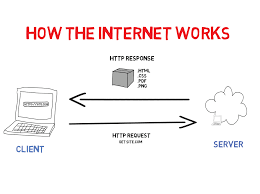

To start using PHP, you can:
To run PHP in your Computer, you will need to install a web server like Apache and a database like MySQL – and both are supported by XAMPP.
OR
Find a web server with PHP and MySQL support
XAMPP stands for
It is a local server that can run smoothly on our personal computer, and is accepted in both Windows and Linux. It also helps you test websites and see if they work before actually publishing them to a web server.
Follow the steps below to install:
Set PHP 8 to System's Path:
php --version and click enter. You should see something similar to
this:C:\xampp\htdocs directoryC:\xampp\htdocs directoryindex.php in
C:\xampp\htdocs\webcapz
<?php
echo "Hello World";
A PHP script starts with <?php and ends with ?>.
Since PHP files can contain text, HTML, CSS, JavaScript, and PHP code, a PHP script can be placed anywhere in the document.
Sometimes the closing ?> is omitted if the rest of the code is php
PHP statements must end with a semicolon (;).
<!DOCTYPE html>
<html>
<body>
<h1>My first PHP page</h1>
<p><?php
echo "Hello World!";
?></p>
</body>
</html>
In PHP, keywords (e.g. if, else, while, echo, etc.), classes, functions, and user-defined functions are not case-sensitive.
In the example below, all three echo statements below are equal and legal:
<!DOCTYPE html>
<html>
<body>
<?php
ECHO "Hello World!<br>";
echo "Hello World!<br>";
EcHo "Hello World!<br>";
?>
</body>
</html>
But All variable names are case-sensitive!
Look at the example below; only the first statement will display the value of the $color variable!
This is because $color, $COLOR, and $coLOR are treated as three different
variables:
<!DOCTYPE html>
<html>
<body>
<?php
$color = "red";
echo "My car is " . $color . "<br>";
echo "My house is " . $COLOR . "<br>";
echo "My boat is " . $coLOR . "<br>";
?>
</body>
</html>
A comment in PHP code is a line that is not executed as a part of the program. Comments can be used to:
In VSCode editor highlight the desired code and press ctrl + c + k
Single Line
<!DOCTYPE html>
<html>
<body>
<?php
// This is a single-line comment
# This is also a single-line comment
?>
</body>
</html>
Multi Line
<!DOCTYPE html>
<html>
<body>
<?php
/*
This is a multiple-lines comment block
that spans over multiple
lines
*/
?>
</body>
</html>
PHP runs on the server and output html to the browser but whatever is enclosed in the
<?php ?> tag does not appear on the browser except we display/output it. This includes:
echo: outputs values but has no return value
<?php
echo "Hello World ---";
echo ("Hello World 2");
$username = "Ilodigwe Chinaza";
echo "Hello and Welcome ".$username;
echo "Hello and Welcome $username";
print: outputs values and has a return value of 1 so it can be used in expressions. e.g
<?php
print "Hello World -----";
$our_variable = print("Hello World 2 ------");
echo $our_variable;
printf(format,arg1,arg2,arg++):
Outputs a formatted string. This function works "step-by-step". At the first % sign, arg1 is inserted,
at the second % sign, arg2 is inserted, etc.
<?php
$number = 9;
$str = "Beijing";
printf("There are %u million bicycles in %s.",$number,$str);
related functions include
sprintf(), vprintf(), vsprintf(), fprintf() and
vfprintf()
print_r: Print the information about some variables in a more human-readable way:
<?php
$b = array("Peter"=>"35", "Ben"=>"37", "Joe"=>"43");
print_r($b);
var_dump: Dumps information about different variables (i.e data type and value). but not as human
readable as print_r
<?php
$b = "Hello world!";
$e = array(32, "Hello world!", 32.5, array("red", "green", "blue"));
var_dump($e);
echo "<br>";
// Dump two variables
var_dump($e, $b);
echo "<br>";
print and echo statements can be used with or without parentheses
Variables are like containers for storing data.
Unlike other programming languages, PHP has no command for declaring a variable. It is created the moment you first assign a value to it.
A variable starts with the $ sign, followed by the name of the variable:
<?php
$txt = "Hello world!";
$x = 5;
Rules for PHP variables:
_$age and $AGE are two different variables)<?php
$username = "Ilodigwe Chinaza";
$num1 = 2;
$num2 = 8;
$sum = $num1 + $num2;
echo "Hello and Welcome ".$username;
echo "<br>";
echo "The sum of $num1 and $num2 is $sum";
PHP is a Loosely Typed Language:
In the example above, notice that we did not have to tell PHP which data type the variable is.
PHP automatically associates a data type to the variable, depending on its value. Since the data types are not set in a strict sense, you can do things like adding a string to an integer without causing an error.
PHP also provides automatic data type conversion.
So, if you assign an integer value to a variable, the type of that variable will automatically be an integer. Then, if you assign a string to the same variable, the type will change to a string.
This automatic conversion can sometimes break your code.
In PHP 7, type declarations were added. This gives an option to specify the data type expected when declaring a function, and by enabling the strict requirement, it will throw a "Fatal Error" on a type mismatch.
You will learn more about strict and non-strict requirements, and data type declarations in the PHP Functions chapter.
isset(variable):This is a very useful function used to check whether a variable is empty. Also check whether the variable is set/declared without throwing an error: Syntax
isset(variable, another variable, ...);
Note: A variable can be unset with the unset() function.
<?php
$a = 0;
// True because $a is set
if (isset($a)) {
echo "Variable 'a' is set.<br>";
}
$array = ["name"=>"chinaza"];
// True because $array["gender"] is set
if (isset($array["gender"])) {
echo "Variable 'a' is set.<br>";
}
$b = null;
// False because $b is NULL
if (isset($b)) {
echo "Variable 'b' is set.";
}
?>
Constants are like variables except that once they are defined they cannot be changed or undefined. Unlike variables, constants are automatically global across the entire script.
A valid constant name starts with a letter or underscore (no $ sign before the constant name,
very important).
To create a constant, use the define() function.
Syntax: define(name, value)
Parameters:
name: Specifies the name of the constantvalue: Specifies the value of the constant<?php
define("GREETING", "Welcome to W3Schools.com!");
echo GREETING;
The scope of a variable is the part of the script where the variable can be referenced/used. PHP has three different variable scopes:
A variable declared within a function has a LOCAL SCOPE and can only be accessed within that function:
<?php
function myTest() {
$x = 5; // local scope
echo "<p>Variable x inside function is: $x</p>";
}
myTest();
// using x outside the function will generate an error
echo "<p>Variable x outside function is: $x</p>";
A variable declared outside a function has a GLOBAL SCOPE and can only be accessed outside a function:
<?php
$x = 5; // global scope
function myTest() {
// using x inside this function will generate an error
echo "<p>Variable x inside function is: $x</p>";
}
myTest();
echo "<p>Variable x outside function is: $x</p>";
global KeywordThe global keyword is used to access a global variable from within a function.
To do this, use the global keyword before the variables (inside the function):
<?php
$x = 5;
$y = 10;
function myTest() {
global $x, $y;
$y = $x + $y;
}
myTest();
echo $y; // outputs 15
PHP also stores all global variables in an array called $GLOBALS[index]. The index holds the name of
the variable. This array is also accessible from within functions and can be used to update global variables
directly.
The example above can be rewritten like this:
<?php
$x = 5;
$y = 10;
function myTest() {
$GLOBALS['y'] = $GLOBALS['x'] + $GLOBALS['y'];
}
myTest();
echo $y; // outputs 15
echo $GLOBALS['y']; // outputs 15
static Keyword:Normally, when a function is completed/executed, all of its variables are deleted. However, sometimes we want a local variable NOT to be deleted. We need it for a further job.
To do this, use the static keyword when you first declare the variable:
With the static keyword
<?php
function myTest() {
static $x = 0;
echo $x;
$x++;
}
myTest();
myTest();
myTest();
Some predefined variables in PHP are "superglobals", which means that they are always accessible, regardless of scope - and you can access them from any function, class or file without having to do anything special.
The PHP superglobal variables are:
$GLOBALS$GLOBALS is a PHP super global variable which is used to access global variables from anywhere in the PHP script (also from within functions or methods).
PHP stores all global variables in an array called $GLOBALS[index]. The index holds the name of the variable. Like in the previous example.
$_SERVERThis is a PHP super global variable which holds information about headers, paths, and script locations.
<?php
echo $_SERVER['PHP_SELF'];
echo "<br>";
echo $_SERVER['SERVER_NAME'];
echo "<br>";
echo $_SERVER['HTTP_HOST'];
echo "<br>";
echo $_SERVER['HTTP_REFERER'];
echo "<br>";
echo $_SERVER['HTTP_USER_AGENT'];
echo "<br>";
echo $_SERVER['SCRIPT_NAME'];
echo $_SERVER['REQUEST_METHOD'];
The full reference can be found here
$_REQUESTThis is a PHP super global variable which is used to collect data after submitting an HTML form. Contains form data
for both method="get" and method="post"
<html>
<body>
<form method="post" action="<?php echo $_SERVER['PHP_SELF'];?>">
Name: <input type="text" name="username">
<input type="submit">
</form>
<?php
if ($_SERVER["REQUEST_METHOD"] == "POST") {
// collect value of input field
$name = $_REQUEST['username'];
if (empty($name)) {
echo "Name is empty";
} else {
echo $name;
}
}
?>
</body>
</html>
$_POSTA PHP super global variable which is used to collect form data after submitting an HTML form with
method="post". $_POST is also widely used to pass variables.
<html>
<body>
<form method="post" action="<?php echo $_SERVER['PHP_SELF'];?>">
Name: <input type="text" name="username">
<input type="submit">
</form>
<?php
if ($_SERVER["REQUEST_METHOD"] == "POST") {
// collect value of input field
$name = $_POST['username'];
if (empty($name)) {
echo "Name is empty";
} else {
echo $name;
}
}
?>
</body>
</html>
$_GETPHP $_GET is a PHP super global variable which is used to collect form data after submitting an HTML form with
method="get".
$_GET can also collect data sent in the URL.
Assume we have an HTML page that contains a hyperlink with parameters:
<html>
<body>
<a href="<?php echo $_SERVER['PHP_SELF']; ?>?subject=PHP&tutor=Ilodigwe_Chinaza">Test $GET</a>
<?php
if (isset($_GET['subject']) || isset($_GET['tutor'])) {
echo "Study " . $_GET['subject'] . " at " . $_GET['tutor'];
}
?>
</body>
</html>
When a user clicks on the link "Test $GET", the parameters "subject" and "web" are sent to "test_get.php", and you can then access their values in "test_get.php" with $_GET.
$_FILESPHP $_FILES is a PHP super global variable which is used to collect form data for
<input type="file"> after submitting an HTML form with
method="post" and enctype="multipart/form-data.
Assume we have an HTML page that contains a hyperlink with parameters:
<html>
<body>
<form method="post" action="<?php echo $_SERVER['PHP_SELF']; ?>" enctype="multipart/form-data">
Name: <input type="text" name="fname">
Photo: <input type="file" name="photo" accept="[.jpg .png .jpeg]">
<input type="submit">
</form>
<?php
if ($_SERVER["REQUEST_METHOD"] == "POST") {
// collect value of input field
$name = $_POST['fname'];
$photo = $_FILES['photo'];
if (empty($photo)) {
echo "Photo is empty";
} else {
print_r($photo);
}
}
?>
</body>
</html>
$_SESSIONTo access or change a session variable:
<?php
session_start();
?>
<!DOCTYPE html>
<html>
<body>
<?php
// to change a session variable, just overwrite it
$_SESSION["favcolor"] = "yellow";
print_r($_SESSION);
?>
</body>
</html>
$_ENVTo set or access an environment variable:
<?php
$_ENV['key'] = 'kjcd';
echo $_ENV['key'];
Variables can store data of different types, and different data types can do different things.
PHP supports the following data types:
A string can be any text inside quotes. You can use single '' or double quotes
"":
<?php
$x = "Hello world!";
echo $x;
An integer data type is a non-decimal number between -2,147,483,648 and 2,147,483,647.
Rules for integers:
#### PHP Float
A float (floating point number) is a number with a decimal point or a number in exponential form.
In the following example $x is a float:
```php
<?php
$x = 10.365;
var_dump($x);
A Boolean represents two possible states: true or false.
Booleans are often used in conditional testing. You will learn more about conditional testing in a later chapter of
this tutorial.
:
<?php
$x = true;
$y = false;
var_dump($x,$y);
An array stores multiple values in one single variable.
You can declare an array using the the array() function.
:
<?php
$cars = array("Volvo","BMW","Toyota");
var_dump($cars);
Classes and objects are the two main aspects of object-oriented programming.
A class is a template for objects, and an object is an instance of a class.
When the individual objects are created, they inherit all the properties and behaviors from the class, but each object will have different values for the properties.
Let's assume we have a class named Car. A Car can have properties like model, color, etc. We can define variables like $model, $color, and so on, to hold the values of these properties.
When the individual objects (Volvo, BMW, Toyota, etc.) are created, they inherit all the properties and behaviors from the class, but each object will have different values for the properties.
If you create a __construct() function, PHP will automatically call this function when you create an object from a class.
<?php
class Car {
public $color;
public $model;
public function __construct($color, $model) {
$this->color = $color;
$this->model = $model;
}
public function message() {
return "My car is a " . $this->color . " " . $this->model . "!";
}
}
$myCar = new Car("black", "Volvo");
echo $myCar -> message();
echo "<br>";
$myCar = new Car("red", "Toyota");
echo $myCar -> message();
Null is a special data type which can have only one value: NULL.
A variable of data type NULL is a variable that has no value assigned to it.
Tip: If a variable is created without a value, it is automatically assigned a value of NULL.
Variables can also be emptied by setting the value to NULL:
<?php
$x = "Hello world!";
$x = null;
var_dump($x);
The special resource type is not an actual data type. It is the storing of a reference to functions and resources external to PHP.
A common example of using the resource data type is a database call.
We will not talk about the resource type here, since it is an advanced topic.
A string is a sequence of characters, i.e it's characters can be accessed like an numeric array.
<?php
$my_string = "Hello world!";
echo $my_string[4]; // outputs 'o'
echo $my_string[5]; // outputs ' ' i.e white space character
Here are some functions used for string-related operations. The full list can be seen here
strlen(string) - returns the length of a String
<?php
echo strlen("Hello world!"); // outputs 12
str_word_count(string,return,char) - counts and returns the number of words in a String
<?php
echo str_word_count("Hello world!"); // outputs 2
strrev(string) - returns the reversed version of a String
<?php
echo strrev("Hello world!"); // outputs !dlrow olleH
strpos(string,find,start) - searches for a text in the string and returns the character position
of the first match
<?php
echo strpos("I love php, I love php too!","php"); // outputs 7
str_replace(find,replace,string,count) - replaces some characters with some other characters in a
string and returns the new string.
<?php
echo strlen("Hello world!"); // outputs 12
explode(separator,string) - breaks the words in a string into an array and returns the array
<?php
$str = "Hello world. It's a beautiful day.";
print_r (explode(" ",$str)); // Array ( [0] => Hello [1] => world. [2] => It's [3] => a [4] => beautiful [5] => day. )
implode(separator,string) or join(separator,string) - returns a string from the
elements of an array
<?php
$arr = array('Hello','World!','Beautiful','Day!');
echo join(" ",$arr); // outputs Hello World! Beautiful Day!
str_split(string,length) - splits a string into an array, returns the array
<?php
print_r(str_split("Hello",3));// outputs Array ( [0] => Hel [1] => lo )
strtolower(string) - converts a string to lowercase, returns the string
<?php
echo strtolower("Hello WORLD!"); // outputs hello world!
strtoupper(string) - converts a string to uppercase, returns the string
<?php
echo strtoupper("Hello WORLD!"); // outputs HELLO WORLD!
trim(string,charlist) - removes characters in the charlist(or whitespace if not
specified )from both sides of a string.
Related functions:
ltrim(string,charlist) - Removes whitespace or other predefined characters from the left side
of a stringrtrim(string,charlist) - Removes whitespace or other predefined characters from the right side
of a string<?php
$str = "Hello World!";
echo $str . "<br>";
echo trim($str,"Hed!"); // outputs llo Worl
ucfirst(string) - converts the first character of a string to uppercase.
Related functions:
lcfirst(string) - converts the first character of a string to lowercaseucwords(string) - converts the first character of each word in a string to uppercasestrtoupper(string) - converts a string to uppercasestrtolower(string) - converts a string to lowercase<?php
$arr = array('Hello','World!','Beautiful','Day!');
echo join(" ",$arr); // outputs Hello World! Beautiful Day!
ucwords(string) - converts the first character of each word in a string to uppercase.
Related functions:
ucfirst(string) - converts the first character of a string to uppercaselcfirst(string) - converts the first character of a string to lowercase<?php
$arr = array('Hello','World!','Beautiful','Day!');
echo join(" ",$arr); // outputs Hello World! Beautiful Day!
2, 256, -256, 10358, -179567 are all integers.
An integer is a number without any decimal part.
An integer data type is a non-decimal number between -2147483648 and 2147483647 in 32 bit systems, and between -9223372036854775808 and 9223372036854775807 in 64 bit systems. A value greater (or lower) than this, will be stored as float, because it exceeds the limit of an integer.
Note: Another important thing to know is that even if 4 * 2.5 is 10, the result is stored as float, because one of the operands is a float (2.5).
Here are some rules for integers:
PHP has the following predefined constants for integers:
PHP_INT_MAX - The largest integer supportedPHP_INT_MIN - The smallest integer supportedPHP_INT_SIZE - The size of an integer in bytesPHP has the following functions to check if the type of a variable is integer:
is_int(number)is_integer(number) - alias of is_int()is_long(number) - alias of is_int()A float is a number with a decimal point or a number in exponential form.
2.0, 256.4, 10.358, 7.64E+5, 5.56E-5 are all floats.
The float data type can commonly store a value up to 1.7976931348623E+308 (platform dependent), and have a maximum precision of 14 digits.
PHP has the following predefined constants for floats (from PHP 7.2):
PHP has the following functions to check if the type of a variable is float:
<?php
$x = 10.365;
var_dump(is_float($x));
echo "<br>";
echo(PHP_FLOAT_MAX);
A numeric value that is larger than PHP_FLOAT_MAX is considered infinite.
PHP has the following functions to check if a numeric value is finite or infinite:
is_finite(number)is_infinite(number)<?php
$x = 1.9e411;
var_dump($x);
NaN stands for Not a Number.
PHP has the following functions to check if a value is not a number:
is_nan(number)NaN is used for impossible mathematical operations. Invalid calculation will return a NaN value:
<?php
$x = acos(8);
var_dump($x);
echo (is_nan($x));
The PHP is_numeric() function can be used to find whether a variable is numeric. The function returns true if the variable is a number or a numeric string, false otherwise.
<?php
$x = 5985;
var_dump(is_numeric($x));
$x = "5985";
var_dump(is_numeric($x));
$x = "59.85" + 100;
var_dump(is_numeric($x));
$x = "Hello";
var_dump(is_numeric($x));
Sometimes you need to cast a numerical value into another data type.
The (int), (integer), or intval() function are often used to convert a value
to an integer.
<?php
// Cast float to int
$x = 23465.768;
$int_cast = intval($x);
var_dump($int_cast);
echo "<br>";
// Cast string to int
$x = "23465.768";
$int_cast = intval($x);
var_dump($int_cast);
An array stores multiple values in one single variable
Instead of storing related variables separately like:
<?php
$cars1 = "Volvo";
$cars2 = "BMW";
$cars3 = "Toyota";
We can store it in an Array:
<?php
$cars = array("Volvo", "BMW", "Toyota");
echo "My favorite car is " . $cars[2];
The array() function is used to create an array. They can also be created with square brackets
[]
In PHP, there are three types of arrays:
Indexed arrays - Arrays with a numeric index. e.g
$cars = ["Volvo", "BMW", "Toyota"];
echo "My favorite car is " . $cars[2];
Associative arrays - Arrays with named keys. They are stored as key => value pairs
e.g
<?php
$tutor = array("Name"=>"Ilodigwe Chinaza", "Gender"=>"Male");
$artiste = ["Name"=>"Cynthia Morgan", "Gender"=>"Female"];
echo "The name of my tutor is " . $tutor["Name"];
echo "My favorite female artiste is " . $artiste["Name"];
Multidimensional arrays - Arrays containing one or more arrays
<?php
$cars = [
array("Volvo",22,18),
array("BMW",15,13),
["Saab",5,2],
array("Land Rover",17,15)
];
echo $cars[0][0].": In stock: ".$cars[0][1].", sold: ".$cars[0][2].".<br>";
echo $cars[1][0].": In stock: ".$cars[1][1].", sold: ".$cars[1][2].".<br>";
echo $cars[2][0].": In stock: ".$cars[2][1].", sold: ".$cars[2][2].".<br>";
echo $cars[3][0].": In stock: ".$cars[3][1].", sold: ".$cars[3][2].".<br>";
The full list can be found here
sort(array) - sort arrays in ascending order
<?php
$cars = array("Volvo", "BMW", "Toyota");
sort($cars);
other related functions include:
rsort() - sort arrays in descending orderasort() - sort associative arrays in ascending order, according to the valueksort() - sort associative arrays in ascending order, according to the keyarsort() - sort associative arrays in descending order, according to the valuekrsort() - sort associative arrays in descending order, according to the key array_intersect(array1, array2, array3, ...) - The array_intersect() function compares the values
of two (or more) arrays, and returns the matches as an array.
<?php
$a1=array("a"=>"red","b"=>"green","c"=>"blue","d"=>"yellow");
$a2=array("e"=>"red","f"=>"black","g"=>"purple");
$a3=array("a"=>"red","b"=>"black","h"=>"yellow");
$result=array_intersect($a1,$a2,$a3);
print_r($result);
array_pop(array) - deletes the last element of an array.
<?php
$a=array("red","green","blue");
array_pop($a);
print_r($a);
array_push(array, value1, value2, ...) - inserts one or more elements to the end of an array.
<?php
$a=array("red","green");
array_push($a,"blue","yellow");
print_r($a);
array_shift(array) - removes the first element from an array, and returns the value of the removed
element.
<?php
$a=array("a"=>"red","b"=>"green","c"=>"blue");
echo array_shift($a);
print_r ($a);
array_shift(array) - removes the first element from an array, and returns the value of the removed
element.
<?php
$a=array("a"=>"red","b"=>"green","c"=>"blue");
echo array_shift($a);
print_r ($a);
array_slice(array, start, length, preserve) - returns selected parts of an array.
Note: If the array have string keys, the returned array will always preserve the keys (See example 4).
<?php
$a=array("red","green","blue","yellow","brown");
print_r(array_slice($a,2));
array_splice(array, start, length, array) - removes selected elements from an array and replaces
it with new elements. The function also returns an array with the removed elements.
<?php
$a1=array("a"=>"red","b"=>"green","c"=>"blue","d"=>"yellow");
$a2=array("a"=>"purple","b"=>"orange");
array_splice($a1,0,2,$a2);
print_r($a1);
array_unshift(array, value1, value2, value3, ...) - inserts new elements to an array. The new
array values will be inserted in the beginning of the array.
Tip: You can add one value, or as many as you like.
Note: Numeric keys will start at 0 and increase by 1. String keys will remain the same.
<?php
$a=array("a"=>"red","b"=>"green");
array_unshift($a,"blue");
print_r($a);
array_keys(array, value, strict) - The array_intersect() function compares the values of two (or
more) arrays, and returns the matches as an array.
<?php
$a1=array("a"=>"red","b"=>"green","c"=>"blue","d"=>"yellow");
$a2=array("e"=>"red","f"=>"black","g"=>"purple");
$a3=array("a"=>"red","b"=>"black","h"=>"yellow");
$result=array_intersect($a1,$a2,$a3);
print_r($result);
array_intersect(array1, array2, array3, ...) - The array_intersect() function compares the values
of two (or more) arrays, and returns the matches as an array.
<?php
$a1=array("a"=>"red","b"=>"green","c"=>"blue","d"=>"yellow");
$a2=array("e"=>"red","f"=>"black","g"=>"purple");
$a3=array("a"=>"red","b"=>"black","h"=>"yellow");
$result=array_intersect($a1,$a2,$a3);
print_r($result);
array_filter(array, callbackfunction, flag) - filters the values of an array using a callback
function.
<?php
function test_odd($var)
{
return $var > 3;
}
$a1 = array(1, 3, 2, 3, 4);
print_r(array_filter($a1, "test_odd"));
array_map(myfunction, array1, array2, array3, ...) - sends each value of an array to a user-made
function or callback function, and returns an array with new values, given by the user-made function.
<?php
function test_odd($var)
{
return $var * 3;
}
$a1 = array(1, 3, 2, 3, 4);
print_r(array_map("test_odd", $a1));
array_merge(array1, array2, array3, ...) - merges one or more arrays into one array.
<?php
$a1=array("red","green");
$a2=array("blue","yellow");
print_r(array_merge($a1,$a2));
array_search(value, array, strict) - search an array for a value and returns the key.
<?php
$a=array("a"=>"red","b"=>"green","c"=>"blue");
echo array_search("red",$a);
array_sum(array) - returns the sum of all the values in the array.
<?php
$a=array(5,15,25);
echo array_sum($a);
array_sum(array) - returns the sum of all the values in the array.
<?php
$a=array(5,15,25);
echo array_sum($a);
array_unique(array, sorttype) - removes duplicate values from an array. If two or more array
values are the same, the first appearance will be kept and the other will be removed.
<?php
$a=array("a"=>"red","b"=>"green","c"=>"red");
print_r(array_unique($a));
array_values(array) - returns an array containing all the values of an array.
<?php
$a=array("Name"=>"Peter","Age"=>"41","Country"=>"USA");
print_r(array_values($a));
count(array, mode) - returns the number of elements in an array.
<?php
$cars=array("Volvo","BMW","Toyota");
echo count($cars);
range(low, high, step) - creates an array containing a range of elements.
This function returns an array of elements from low to high.
Note: If the low parameter is higher than the high parameter, the range array will be from high to low.
<?php
$number = range(0,5);
print_r ($number);
shuffle(array) - randomizes the order of the elements in the array.
<?php
$my_array = array("red","green","blue","yellow","purple");
shuffle($my_array);
print_r($my_array);
The PHP arithmetic operators are used with numeric values to perform common arithmetical operations, such as addition, subtraction, multiplication etc.
| Operator | Name | Example | Result |
|---|---|---|---|
| + | Addition | $x + $y | Sum of $x and $y |
| - | Subtraction | $x - $y | Difference of $x and $y |
| * | Multiplication | $x * $y | Product of $x and $y |
| / | Division | $x / $y | Quotient of $x and $y |
| % | Modulus | $x % $y | Remainder of $x divided by $y |
| ** | Exponentiation | $x ** $y | Result of raising $x to the $y'th power |
The PHP comparison operators are used to compare two values (number or string):
| Operator | Name | Example | Result |
|---|---|---|---|
| == | Equal | $x == $y | Returns true if $x is equal to $y even if they are not of same data type |
| === | Identical | $x === $y | Returns true if $x is equal to $y, and they are of the same type |
| != | Not Equal | $x != $y | Tries to convert $x anf $y to the same data type and returns true if $x is not equal to $y |
| <> | Not Equal | $x <> $y | Tries to convert $x anf $y to the same data type and returns true if $x is not equal to $y |
| > | Greater than | $x > $y | Returns true if $x is greater than to $y |
| >= | Greater than or equal to | $x >= $y | Returns true if $x is greater than or equal to to $y |
| <= | Less than or equal to | $x <= $y | Returns true if $x is less than or equal to to $y |
| < | Less than | $x < $y | Returns true if $x is less than to $y |
| <=> | Spaceship | $x <=> $y | Returns -1, 0 or 1 depending on if $x is less than, equal to, or greater than $y. Introduced in PHP 7. |
<?php
$x = 3<=>4;
echo $x;
echo "<br>";
$x = 4<=>3;
echo $x;
echo "<br>";
$x = 4<=>4;
echo $x;
The PHP logical operators are used to combine conditional statements.
| Operator | Name | Example | Result | ||||
|---|---|---|---|---|---|---|---|
| and | And | $x and $y | Returns true if both $x and $y are true | ||||
| && | And | $x && $y | Returns true if both $x and $y are true | ||||
| or | Or | $x or $y | Returns true if either $x or $y are true | ||||
| Or | $x | $y | Returns true if either $x or $y are true | ||||
| xor | Xor | $x xor $y | Returns true if either $x or $y is true, but not both | ||||
| ! | Not | $x ! $y | Returns true if $x is not true |
<?php
$x = "3"<4;
$y = 3>4;
if($x || $y){
echo "correct";
}else{
echo "incorrect";
}
The basic assignment operator in PHP is "=" which can be used for any data type (numeric, string e.t.c ). It means that the left operand gets set to the value of the assignment expression on the right. Other assignment operators (arithmetic assignment operators) are mostly used for numeric operations.
| Assignment | Same as... | Description |
|---|---|---|
| x = y | x = y | The left operand gets set to the value of the expression on the right |
| x += y | x = x + y | Adds y to the old value of x |
| x -= y | x = x - y | subtracts y from the old value of x |
| x *= y | x = x * y | multiplies the old value of x by y |
| x /= y | x = x / y | divides the old value of x by y |
| x %= y | x = x % y | remainder of the the old value of x division by y |
<?php
$x = 8;
$y = 3;
$x += $y;
echo $x;
echo "<br>";
$x += 1;
echo $x;
These increases or decreases a value by 1
| Operator | Name | Result |
|---|---|---|
| ++$x | Pre-increment | Increments $x by one, then returns $x |
| $x++ | Post-increment | Returns $x, then increments $x by one |
| --$x | Pre-decrement | Decrements $x by one, then returns $x |
| $x-- | Post-decrement | Returns $x, then decrements $x by one |
<?php
$x = 2;
echo $x++;
echo "<br>";
echo $x;
PHP has two operators that are specially designed for strings.
| Operator | Name | Example | Result |
|---|---|---|---|
| . | Concatenation | $txt1 . $txt2 | Concatenation of $txt1 and $txt2 |
| .= | Concatenation assignment | $txt1 .= $txt2 | Appends $txt2 to the old value of $txt1 |
<?php
$txt1 = "hello";
$txt2 = "world";
echo ($txt1 . $txt2);
echo "<br>";
$txt1 .= $txt2;
echo $txt1;
echo "<br>";
echo $txt2;
The PHP array operators are used to compare arrays.
| Operator | Name | Example | Result |
|---|---|---|---|
| + | Union | $array1 + $array2 | Union of $array1 and $array2 |
| == | Equality | $array1 == $array2 | Returns true if $array1 and $array2 have the same key/value pairs |
| === | Identical | $array1 === $array2 | Returns true if $array1 and $array2 have the same key/value pairs in the same order and of the same types |
| != | Inequality | $array1 != $array2 | Returns true if $array1 and $array2 doesn't have the same key/value pairs |
| <> | Inequality | $array1 <> $array2 | Returns true if $array1 and $array2 doesn't have the same key/value pairs |
| !== | Non-Identical | $array1 !== $array2 | Returns true if $array1 and $array2 doesn't have the same key/value pairs in the same order or are not of the same types |
<?php
$array1 = ["name" => "chinaza", "gender" => "male"];
$array2 = ["name" => "chinaza", "gender" => "male"];
$array3 = ["gender" => "male", "name" => "chinaza"];
$array4 = ["nationality" => "nigeria"];
var_dump($array1 + $array4);
echo "<br>";
var_dump($array1 == $array2);
echo "<br>";
var_dump($array1 === $array3);
echo "<br>";
var_dump($array1 != $array3);
echo "<br>";
var_dump($array1 !== $array3);
The PHP conditional assignment operators are used to set a value depending on conditions: The PHP array operators are used to compare arrays.
| Operator | Name | Example | Result |
|---|---|---|---|
| ? : | Ternary | $x = (expr1) ? (expr2) : (expr3) | The value of $x is expr2 if expr1 = TRUE. The value of $x is expr3 if expr1 = FALSE |
| ?? | Null coalescing | $x = (expr1) ?? (expr2) | The value of $x is expr1 if expr1 exists, and is not NULL. If expr1 does not exist, or is NULL, the value of $x is expr2. Introduced in PHP 7 |
<?php
$status = "successful";
$counter = null;
$x = ($status === "successful") ? ("Verified") : ("Something went Wrong");
$y = ($counter) ?? (1);
echo ($x);
echo "<br>";
echo ($y);
Conditional statements are used to perform different actions based on different conditions. In PHP we have the following conditional statements:
if statement - executes some code if one condition is trueif...else statement - executes some code if a condition is true and another code if that condition
is falseif...elseif...else statement - executes different codes for more than two conditionsswitch statement - selects one of many blocks of code to be executedif StatementSyntax:
if (condition) {
code to be executed if condition is true;
}
Example:
<?php
$t = 10;
if ($t < 20) {
echo "$t is less than 20";
}
if...else StatementSyntax:
if (condition) {
code to be executed if condition is true;
} else {
code to be executed if condition is false;
}
Example:
<?php
$t = 10;
if ($t < 20) {
echo "$t is less than 20";
}else {
echo "$t is greater than 20";
}
if...elseif...else StatementSyntax:
if (condition) {
code to be executed if this condition is true;
} elseif (condition) {
code to be executed if first condition is false and this condition is true;
} else {
code to be executed if all conditions are false;
}
Example:
<?php
$t = 10;
if ($t < 20) {
echo "$t is less than 20";
}elseif($t < 5) {
echo "$t is less than 20 but greater than 5";
}else {
echo "$t is greater than 20";
}
switch StatementSyntax:
switch (n) {
case label1:
code to be executed if n=label1;
break;
case label2:
code to be executed if n=label2;
break;
case label3:
code to be executed if n=label3;
break;
...
default:
code to be executed if n is different from all labels;
}
This is how it works: First we have a single expression n (most often a variable), that is
evaluated once. The value of the expression is then compared with the values for each case in the structure. If
there is a match, the block of code associated with that case is executed. Use break to prevent the
code from running into the next case automatically. The default statement is used if no match is found.
Example:
<?php
$favcolor = "red";
switch ($favcolor) {
case "red":
echo "Your favorite color is red!";
break;
case "blue":
echo "Your favorite color is blue!";
break;
case "green":
echo "Your favorite color is green!";
break;
default:
echo "Your favorite color is neither red, blue, nor green!";
}
Often when you write code, you want the same block of code to run over and over again a certain number of times. So, instead of adding several almost equal code-lines in a script, we can use loops.
Loops are used to execute the same block of code again and again, as long as a certain condition is true.
In PHP, we have the following loop types:
while - loops through a block of code as long as the specified condition is truedo...while - loops through a block of code once, and then repeats the loop as long as the specified
condition is truefor - loops through a block of code a specified number of times
foreach - loops through a block of code for each element in an arraywhile loopThe while loop - Loops through a block of code as long as the specified condition is true.
Syntax:
while (condition is true) {
code to be executed;
}
Example:
<?php
$x = 1;
while($x <= 5) {
echo "The number is: $x <br>";
$x++;
}
Example Explained:
do...while loopThe do...while loop will always execute the block of code at least once (even if the condition is
false), it will then check the condition, and repeat the loop while the specified condition is true.
Syntax:
do {
code to be executed;
} while (condition is true);
Example:
<?php
$x = 1;
do {
echo "The number is: $x <br>";
$x++;
} while ($x <= 5);
Example Explained: The example below first sets a variable $x to 1 ($x = 1). Then, the do while loop will write some output, and then increment the variable $x with 1. Then the condition is checked (is $x less than, or equal to 5?), and the loop will continue to run as long as $x is less than, or equal to 5:
for loopThe for loop - Loops through a block of code a specified number of times.
Syntax:
for (initialize counter; test counter condition; increment counter) {
code to be executed for each iteration;
}
Parameters:
init counter: Initialize the loop counter valuetest counter condition: Evaluated for each loop iteration. If it evaluates to TRUE, the loop
continues. If it evaluates to FALSE, the loop ends.increment counter: Increases the loop counter valueExample:
<?php
for ($x = 0; $x <= 10; $x++) {
echo "The number is: $x <br>";
}
Example Explained:
foreach loopThe foreach loop - Loops through a block of code a specified number of times.
Syntax for Indexed arrays:
foreach ($array as $value) {
code to be executed;
}
Syntax for Associative arrays:
foreach ($array as $key -> $value) {
code to be executed;
}
Example:
<?php
// Indexed array
$colors = array("red", "green", "blue", "yellow");
foreach ($colors as $value) {
echo "$value <br>";
}
// Associative array
$age = array("Peter"=>"35", "Ben"=>"37", "Joe"=>"43");
foreach($age as $x => $val) {
echo "$x = $val<br>";
}
break & continueYou have already seen the break statement used in an earlier chapter of this tutorial. It was used to
"jump out" of a switch statement.
The break statement can also be used to jump out of a loop.
This example jumps out of the loop when x is equal to 4:
<?php
for ($x = 0; $x < 10; $x++) {
if ($x == 4) {
break;
}
echo "The number is: $x <br>";
}
The continue statement skips one iteration (in the loop), if a specified condition occurs, and
continues with the next iteration in the loop.
This example skips the value of 4:
<?php
for ($x = 0; $x < 10; $x++) {
if ($x == 4) {
continue;
}
echo "The number is: $x <br>";
}
The real power of PHP comes from its functions.
PHP has more than 1000 built-in functions, and in addition you can create your own custom functions.
See the complete list of the PHP built-in functions here
A user-defined function declaration starts with the keyword function:
Syntax:
function functionName() {
code to be executed;
}
function_name(parameters_if_any)).
In the example below, we create a function named "writeMsg()". The opening curly brace ( { ) indicates the beginning of the function code, and the closing curly brace ( } ) indicates the end of the function. The function outputs "Hello world!". To call the function, just write its name followed by brackets ():
<?php
function writeMsg() {
echo "Hello world!";
}
writeMsg(); // call the function
Information can be passed to functions through arguments. An argument is just like a variable.
Arguments are specified after the function name, inside the parentheses. You can add as many arguments as you want, just separate them with a comma.
The following example has a function with one argument $fname. When the familyName()
function is called, we also pass along a name (e.g. Jani), and the name is used inside the function, which outputs
several different first names, but an equal last name:
<?php
function familyName($fname) {
echo "$fname Refsnes.<br>";
}
familyName("Jani");
familyName("Hege");
familyName("Stale");
familyName("Kai Jim");
familyName("Borge");
In the example above, notice that we did not have to tell PHP which data type the variable is.
PHP automatically associates a data type to the variable, depending on its value. Since the data types are not set in a strict sense, you can "unexpectedly" do things like adding a string to an integer without causing an error.
In PHP 7, type declarations were added. This gives us an option to specify the expected data type when declaring a function, and by adding the strict declaration, it will throw a "Fatal Error" if the data type mismatches.
In the following example we try to send both a number and a string to the function without using
strict
<?php
function addNumbers(int $a, int $b) {
return $a + $b;
}
echo addNumbers(5, "5 days");
// since strict is NOT enabled "5 days" is changed to int(5), and it will return 10
To specify strict we need to set declare(strict_types=1);. This must be on the very first
line of the PHP file.
In the following example we try to send both a number and a string to the function, but here we have added the strict declaration:
<?php declare(strict_types=1); // strict requirement
function addNumbers(int $a, int $b) {
return $a + $b;
}
echo addNumbers(5, "5 days");
// since strict is enabled and "5 days" is not an integer, an error will be thrown
The following example shows how to use a default parameter. If we call the function setHeight() without arguments it takes the default value as argument:
<?php
declare(strict_types=1); // strict requirement
function setHeight(int $minheight = 50) {
echo "The height is : $minheight <br>";
}
setHeight(350);
setHeight(); // will use the default value of 50
setHeight(135);
setHeight(80);
To let a function return a value, use the return statement.
Return Type Declarations :
PHP 7 also supports Type Declarations for the return statement. Like with the type declaration for function arguments, by enabling the strict requirement, it will throw a "Fatal Error" on a type mismatch.
To declare a type for the function return, add a colon : and the type right before the opening curly
{ bracket when declaring the function.
In the following example we specify the return type for the function:
<?php
declare(strict_types=1); // strict requirement
function addNumbers(float $a, float $b) : int {
return (int)($a + $b);
}
echo addNumbers(1.2, 5.2);
In PHP, arguments are usually passed by value, which means that a copy of the value is used in the function and the variable that was passed into the function cannot be changed.
When a function argument is passed by reference, changes to the argument also change the variable that was passed in. To turn a function argument into a reference, the & operator is used:
<?php
// usual way to update a variable:
function add_five($value)
{
return $value += 5;
}
$num = 2;
$num = add_five($num);
echo $num;
// Use a pass-by-reference argument to update a variable:
function add_fives(&$value)
{
$value += 5;
}
$num2 = 3;
add_fives($num2);
echo $num2;
A callback function (often referred to as just "callback") is a function which is passed as an argument into another function.
Any existing function can be used as a callback function. To use a function as a callback function, pass a string containing the name of the function as the argument of another function:
Example
Pass a callback to PHP's array_map() function to calculate the length of every string in an array:
<?php
function my_callback($item) {
return strlen($item);
}
$strings = ["apple", "orange", "banana", "coconut"];
$lengths = array_map("my_callback", $strings);
print_r($lengths);
?>
Anonymous Functions
Starting with version 7, PHP can pass anonymous functions as callback functions:
<?php
$strings = ["apple", "orange", "banana", "coconut"];
$lengths = array_map( function($item) { return strlen($item); } , $strings);
print_r($lengths);
?>
Callbacks in User Defined Functions User-defined functions and methods can also take callback functions as arguments. To use callback functions inside a user-defined function or method, call it by adding parentheses to the variable and pass arguments as with normal functions:
<?php
function exclaim($str) {
return $str . "! ";
}
function ask($str) {
return $str . "? ";
}
function printFormatted($str, $format) {
// Calling the $format callback function
echo $format($str);
}
// Pass "exclaim" and "ask" as callback functions to printFormatted()
printFormatted("Hello world", "exclaim");
printFormatted("Hello world", "ask");
?>
PHP has a set of math functions that allows you to perform mathematical tasks on numbers. Get the complete list here
pi(): returns the value of PI
<?php
echo(pi()); // returns 3.1415926535898
?>
min() and max(): used to find the lowest or highest value in a list of arguments
<?php
echo(min(0, 150, 30, 20, -8, -200)); // returns -200
echo(max(0, 150, 30, 20, -8, -200)); // returns 150
?>
abs(): returns the absolute (positive) value of a number:
<?php
echo(abs(-6.7)); // returns 6.7
?>
round(): rounds a floating-point number to its nearest integer:
<?php
echo(round(0.60)); // returns 1
echo(round(0.49)); // returns 0
?>
rand(): generates a random number:
<?php
echo(rand());
// To get more control over the random number, you can add the optional min and max parameters to specify the lowest integer and the highest integer to be returned.
echo(rand(10, 100));
?>
The PHP date() function formats a timestamp to a more readable date and time.
Syntax:
<?php
date(format,timestamp);
format - Requiredtimestamp - (optional, default is the current time()). A timestamp is a
numeric value in seconds between the current time() and value as at
1st January, 1970 00:00:00 Greenwich Mean Time (GMT)
The required format parameter of the date() function specifies how to format the date (or time).
The format parameter of the date() function specifies how to format the date (or time).
Here are some characters that are commonly used for dates:
Other characters, like"/", ".", or "-" can also be inserted between the characters to add additional formatting.
The example below formats today's date in three different ways:
<?php
echo "Today is " . date("Y/m/d") . "<br>";
echo "Today is " . date("Y.m.d") . "<br>";
echo "Today is " . date("Y-m-d") . "<br>";
echo "Today is " . date("l");
Here are some characters that are commonly used for times:
<?php
echo "The time is " . date("h:i:sa");
If the time you got back from the code is not correct, it's probably because your server is in another country or set up for a different timezone.
So, if you need the time to be correct according to a specific location, you can set the timezone you want to use. See full list of valid timezones here.
The example below sets the timezone to "America/New_York", then outputs the current time in the specified format:
<?php
date_default_timezone_set("America/New_York");
echo "The time is " . date("h:i:sa");
The optional timestamp parameter in the date() function specifies a timestamp. If
omitted, the current date and time will be used (as in the examples above).
The PHP mktime() function returns the Unix timestamp for a date. The Unix timestamp contains the
number of seconds between the Unix Epoch (January 1 1970 00:00:00 GMT) and the time specified.
Syntax:
mktime(hour, minute, second, month, day, year)
The example below creates a date and time with the date() function from a number of parameters in the mktime() function:
Example:
<?php
$our_timestamp=mktime(11, 14, 54, 8, 12, 2014);
echo "Created date is " . date("Y-m-d h:i:sa", $our_timestamp);
The PHP strtotime() function returns the Unix timestamp from a human readable date.
Syntax:
strtotime(time, now)
Example:
<?php
$our_timestamp = strtotime("10:30pm April 15 2014");
echo "Created date is " . date("Y-m-d h:i:sa", $our_timestamp) . "<br>";
$our_timestamp = strtotime("tomorrow");
echo "Created date is " . date("Y-m-d h:i:sa", $our_timestamp) . "<br>";
$our_timestamp = strtotime("+3 Months");
echo "Created date is " . date("Y-m-d h:i:sa", $our_timestamp) . "<br>";
// output the dates for the next six Saturdays:
$startdate = strtotime("Saturday");
$enddate = strtotime("+6 weeks", $startdate);
while ($startdate < $enddate) {
echo date("M d", $startdate) . "<br>";
$startdate = strtotime("+1 week", $startdate);
}
// output the number of days until 4th of July:
$july4_timestamp=strtotime("July 04");
// divide time in seconds by 60*60*24 and round up
$days=ceil(($july4_timestamp-time())/(60*60*24));
echo "There are " . $days ." days until 4th of July.";
However, strtotime() is not perfect, so remember to check the strings you put in there.
A regular expression is a sequence of characters that forms a search pattern. When you search for data in a text, you can use this search pattern to describe what you are searching for.
A regular expression can be a single character, or a more complicated pattern.
Regular expressions can be used to perform all types of text search and text replace operations.
In PHP, regular expressions are strings composed of delimiters, a pattern and optional
modifiers.
Syntax:
$exp = "/w3schools/i";
In the example above, / is the delimiter, w3schools is the pattern that is being searched for, and i is a modifier that makes the search case-insensitive.
The delimiter can be any character that is not a letter, number, backslash or space. The most common delimiter is the forward slash (/), but when your pattern contains forward slashes it is convenient to choose other delimiters such as # or ~.
$exp = "/w3schools/i";
| Function | Description |
|---|---|
| preg_match() | Returns 1 if the pattern was found in the string and 0 if not |
| preg_match_all() | Returns the number of times the pattern was found in the string, which may also be 0 |
| preg_replace() | Returns a new string where matched patterns have been replaced with another string |
<?php
$str = "Visit W3Schools";
$pattern = "/w3schools/i";
echo preg_match($pattern, $str) . "<br>"; // Outputs 1
$str = "The rain in SPAIN falls mainly on the plains.";
$pattern = "/ain/i";
echo preg_match_all($pattern, $str); // Outputs 4
$str = "Visit Microsoft!";
$pattern = "/microsoft/i";
echo preg_replace($pattern, "W3Schools", $str); // Outputs "Visit W3Schools!"
?>
Modifiers can change how a search is performed.
| Modifier | Description |
|---|---|
| i | Performs a case-insensitive search |
| m | Changes the behavior of ^ and $ to match against a newline boundary (i.e. start or end of each line within a multiline string), instead of a string boundary. |
| g | Perform a global match i.e. finds all occurrences. |
| o | Evaluates the expression only once. |
| s | Changes the behavior of . (dot) to match all characters, including newlines. |
| x | Allows you to use whitespace and comments within a regular expression for clarity. |
<?php
// how to match at the beginning of every line in a multi-line string using ^ anchor and m modifier
$pattern = "/^color/im";
$text = "Color red is more visible than \n color blue in daylight.";
$matches = preg_match_all($pattern, $text, $array);
echo $matches . " matches were found. <br>";
Square brackets surrounding a pattern of characters are called a character class e.g. [abc]. A
character class always matches a single character out of a list of specified characters that means the expression
[abc] matches only a, b or c character.
Negated character classes can also be defined that match any character except those contained within the brackets.
A negated character class is defined by placing a caret (^) symbol immediately after the opening bracket, like this
[^abc].
You can also define a range of characters by using the hyphen - character inside a character class,
like [0-9]. Let's look at some examples of character classes:
| Expression | Description |
|---|---|
| [abc] | Find one character from the options between the brackets |
| [^abc] | Find any character NOT between the brackets |
| [A-Z] | Matches any one character from uppercase a to uppercase z. |
| [a-Z] | Matches any one character from lowercase a to uppercase Z. |
| [0-9] | Find one character from the range 0 to 9 |
| [a-z0-9] | Matches a single character between a and z or between 0 and 9. |
<?php
$pattern = "/ca[kf]e/";
$text = "He was eating cake in the cafe.";
if(preg_match($pattern, $text)){
echo "Match found!";
} else{
echo "Match not found.";
}
Some character classes such as digits, letters, and whitespaces are used so frequently that there are shortcut names for them. The following table lists those predefined character classes:
| Expression | Description |
|---|---|
| | | Find a match for any one of the patterns separated by | as in: cat | dog | fish |
| . | Find just one instance of any character except newline \n |
| ^ | Finds a match as the beginning of a string as in: ^Hello |
| $ | Finds a match at the end of the string as in: World$ |
| \d | Find a digit character. Same as [0-9] |
| \D | Matches any non-digit character. Same as [^0-9] |
| \s | Find a whitespace character. Same as [ \t\n\r] |
| \S | Matches any non-whitespace character. Same as [^ \t\n\r] |
| \w | Matches any word character (definned as a to z, A to Z,0 to 9, and the underscore). Same as
[a-zA-Z_0-9]
|
| \W | Matches any non-word character. Same as [^a-zA-Z_0-9] |
<?php
// Replace spaces, newlines and tabs
$pattern = "/\s/";
$replacement = "-";
$text = "Earth revolves around\nthe\tSun";
echo preg_replace($pattern, $replacement, $text) . "<br>";
Use position anchors when you want to match at the beginning or end of a line, word, or string. To do this you can
use anchors. Two common anchors are caret ^ which represent the start of the string, and the dollar
$ sign which represent the end of the string.
| Expression | Description |
|---|---|
| ^p | Matches the letter p at the beginning of a line. |
| p$ | Matches the letter p at the end of a line. |
<?php
// Replace spaces, newlines and tabs
$pattern = "/\s/";
$replacement = "-";
$text = "Earth revolves around\nthe\tSun";
echo preg_replace($pattern, $replacement, $text) . "<br>";
A word boundary character \b helps you search for the words that begins and/or ends with a pattern.
For example, the regexp /\bcar/ matches the words beginning with the pattern car, and would match cart,
carrot, or cartoon, but would not match oscar.
Similarly, the regexp /car\b/ matches the words ending with the pattern car, and would match scar,
oscar, or supercar, but would not match cart. Likewise, the /\bcar\b/ matches the words beginning and
ending with the pattern car, and would match only the word car.
The following example will highlight the words beginning with car in bold:
<?php
$pattern = '/\bcar\w*/';
$replacement = '<b>$0</b>';
$text = 'Words begining with car: cart, carrot, cartoon. Words ending with car: scar, oscar, supercar.';
echo preg_replace($pattern, $replacement, $text);
?>
Quantifiers define quantities:
| Expression | Description |
|---|---|
| x+ | Matches one or more occurrences of the letter x |
| x* | Matches zero or more occurrences of the letter x |
| x? | Matches zero or one occurrences of the letter x |
| x{n} | Matches any string that contains a letter x, n times |
| x{n,m} | Matches any string that contains a sequence of n to m times |
| x{n,} | Matches any string that contains a sequence of x at least n times |
| n{,3} | Matches at most three occurrences of the letter p |
You can use parentheses ( ) to apply quantifiers to entire patterns.
<?php
// Use grouping to search for the word "banana" by looking for ba followed by two instances of na:
$str = "Apples and bananas.";
$pattern = "/ba(na){2}/i";
if (preg_match($pattern, $str)) {
echo "Match found!";
} else {
echo "Match not found.";
}
// split the string at comma, sequence of commas, whitespace, or combination thereof using the PHP preg_split() function
$pattern = "/[\s,]+/";
$text = "My favourite colors are red, green and blue";
$parts = preg_split($pattern, $text);
// Loop through parts array and display substrings
foreach ($parts as $part) {
echo $part . "<br>";
}
?>
A cookie is often used to identify a user. A cookie is a small file that the server embeds on the user's computer. Each time the same computer requests a page with a browser, it will send the cookie too. With PHP, you can both create and retrieve cookie values.
A cookie is created with the setcookie() function.
A session is a way to store information (in variables) to be used across multiple pages even after refreshing.
Although you can store data using cookies but it has some security issues. Since cookies are stored on user's computer it is possible for an attacker to easily modify a cookie content to insert potentially harmful data in your application that might break your application.
Also every time the browser requests a URL to the server, all the cookie data for a website is automatically sent to the server within the request. It means if you have stored 5 cookies on user's system, each having 4KB in size, the browser needs to upload 20KB of data each time the user views a page, which can affect your site's performance.
You can solve both of these issues by using the PHP session.
A cookie is created with the setcookie() function which must appear BEFORE the tag..
Syntax:
setcookie(name, value, expire, path, domain, secure, httponly);
Only the name parameter is required. All other parameters are optional.
The following example creates a cookie named "user" with the value "John Doe". The cookie will expire after 30 days (86400 * 30). The "/" means that the cookie is available in entire website (otherwise, select the directory you prefer).
We then retrieve the value of the cookie "user" (using the global variable $_COOKIE). We also use the isset() function to find out if the cookie is set:
<?php
$cookie_name = "user";
$cookie_value = "John Doe";
setcookie($cookie_name, $cookie_value, time() + (86400 * 30), "/"); // 86400 = 1 day
?>
<html>
<body>
<?php
if(!isset($_COOKIE[$cookie_name])) {
echo "Cookie named '" . $cookie_name . "' is not set!";
} else {
echo "Cookie '" . $cookie_name . "' is set!<br>";
echo "Value is: " . $_COOKIE[$cookie_name];
}
// To modify a cookie, just set (again) the cookie using the setcookie() function
setcookie("user", "Alex Porter", time() + (86400 * 30), "/");
?>
</body>
</html>
To delete a cookie, use the setcookie() function with an expiration date in the past:
<?php
// set the expiration date to one hour ago
setcookie("user", "", time() - 3600);
?>
<html>
<body>
<?php
echo "Cookie 'user' is deleted.";
?>
</body>
</html>
Note: Don't store sensitive data in cookies since it could potentially be manipulated by the malicious user. To store the sensitive data securely use sessions instead.
When you work with an application, you open it, do some changes, and then you close it. This is much like a Session. The browser knows who you are. It knows when you start the application and when you end. But on the internet there is one problem: the web server does not know who you are or what you do, because the HTTP address doesn't maintain state.
Session variables solve this problem by storing user information to be used across multiple pages (e.g. username, favorite color, etc). By default, session variables last until the user closes the browser (If you need a permanent storage, you may want to store the data in a database e.g MySQL.)
Most sessions set a radomly generated user-key on the user's computer/browser that looks something like this: 765487cf34ert8dede5a562e4f3a7e12. Then, when a session is opened on another page, it scans the computer for a user-key. If there is a match, it accesses that session, if not, it starts a new session.
So; Session variables hold information about one single user, and are available to all pages in one application.
A session is started with the session_start() function, this must be the very first thing in your
document. Before any HTML tags. It will create a new session and generate a unique session ID for the user.
Session variables are set with the PHP global variable: $_SESSION.
Now, let's create a new page called "demo_session1.php". In this page, we start a new PHP session and set some session variables:
<?php
// Starting session
session_start();
?>
<!DOCTYPE html>
<html>
<body>
<?php
// see all session variables
print_r($_SESSION);
echo "<br>";
echo "<br>";
// Storing session data
$_SESSION["firstname"] = "Peter";
$_SESSION["lastname"] = "Parker";
// Accessing session data
echo 'Hi, ' . $_SESSION["firstname"] . ' ' . $_SESSION["lastname"];
?>
</body>
</html>
To remove all global session variables and destroy the session, use session_unset() and session_destroy():
<?php
session_start();
?>
<!DOCTYPE html>
<html>
<body>
<?php
// Removing a particular session data
if(isset($_SESSION["lastname"])){
unset($_SESSION["lastname"]);
}
// remove all session variables
session_unset();
// destroy the session
session_destroy();
?>
</body>
</html>
In this section you will learn how to encode and decode JSON data in PHP.
JSON stands for JavaScript Object Notation. JSON is a standard lightweight data-interchange format which is quick and easy to parse and generate.
A data-interchange format is a text format which is used to interchange or exchange data between different platforms and operating systems. JSON is the most popular and lightweight data-interchange format for web applications.
JSON, like XML, is a text-based format that's easy to write and easy to understand for both humans and computers, but unlike XML, JSON data structures occupy less bandwidth than their XML versions. JSON is based on two basic structures:
[ and ends
with a right bracket ]. Values are separated by a comma ,.
In JSON, keys are always strings, while the value can be a string, number,
true or false, null, object or an array. Strings
must be enclosed in double quotes "" and can contain escape characters such as
\n, \t and \. A JSON object may look like this:
{
"book": {
"name": "Harry Potter and the Goblet of Fire",
"author": "J. K. Rowling",
"year": 2000,
"genre": "Fantasy Fiction",
"bestseller": true,
"fruits": [ "Apple", "Banana", "Strawberry", "Mango"
]
}
}
json_encode()<?php
// An associative array
$marks = array("Peter"=>65, "Harry"=>80, "John"=>78, "Clark"=>90);
echo json_encode($marks); // outputs {"Peter":65,"Harry":80,"John":78,"Clark":90}
// An indexed array
$colors = array("Red", "Green", "Blue", "Orange", "Yellow");
echo json_encode($colors); // ["Red","Green","Blue","Orange","Yellow"]
// force json_encode() function to return an PHP indexed array as JSON object
$colors = array("Red", "Green", "Blue", "Orange");
echo json_encode($colors, JSON_FORCE_OBJECT); // {"0":"Red","1":"Green","2":"Blue","3":"Orange"}
?>
Decoding JSON data is as simple as encoding it. You can use the PHP json_decode() function to convert the JSON encoded string into appropriate PHP data type. The following example demonstrates how to decode or convert a JSON object to PHP object.
<?php
// Store JSON data in a PHP variable
$json = '{"Peter":65,"Harry":80,"John":78,"Clark":90}';
var_dump(json_decode($json, true)); // outputs array(4) { ["Peter"]=> int(65) ["Harry"]=> int(80) ["John"]=> int(78) ["Clark"]=> int(90) }
echo "<br>";
echo $arr["Harry"]; // Output: 80
?>
The include (or require) statement takes all the text/code/markup that exists in the specified file and copies it into the file that uses the include statement.
Including files is very useful when you want to include the same PHP, HTML, or text on multiple pages of a website.
The include and require statements are identical, except upon failure:
require will produce a fatal error (E_COMPILE_ERROR) and stop the scriptinclude will only produce a warning (E_WARNING) and the script will continueSo, if you want the execution to go on and show users the output, even if the include file is missing, use the include statement. Otherwise, in case of FrameWork, CMS, or a complex PHP application coding, always use the require statement to include a key file to the flow of execution. This will help avoid compromising your application's security and integrity, just in-case one key file is accidentally missing.
Including files saves a lot of work. This means that you can create a standard header, footer, or menu file for all your web pages. Then, when the header needs to be updated, you can only update the header include file.
Syntax:
include 'filename';
or
require 'filename';
Example 1 Assume we have a standard menu file called "menu.php", that looks like this:
<?php
echo '<a href="/default.asp">Home</a> -
<a href="/html/default.asp">HTML Tutorial</a> -
<a href="/css/default.asp">CSS Tutorial</a> -
<a href="/js/default.asp">JavaScript Tutorial</a> -
<a href="default.asp">PHP Tutorial</a>';
?>
Assume we have a file called "vars.php", with some variables defined:
<?php
$color='red';
$car='BMW';
To include the menu file in a page, use the include statement:
<html>
<body>
<?php include 'menu.php';?>
<h1>Welcome to my home page!</h1>
<p>Some text.</p>
<?php include 'vars.php';
echo "I have a $color $car.";
?>
<p>Some more text.</p>
</body>
</html>
With PHP, it is easy to upload files to the server.
However, with ease comes danger, so always be careful when allowing file uploads!
In your "php.ini" file, search for the file_uploads directive, and set it to On:
file_uploads = On
Next, create an HTML form that allow users to choose the image file they want to upload:
<!DOCTYPE html>
<html>
<body>
<form action="upload.php" method="post" enctype="multipart/form-data">
Select image to upload:
<input type="file" name="fileToUpload" id="fileToUpload">
<input type="submit" value="Upload Image" name="submit">
</form>
</body>
</html>
The "upload.php" file contains the code for uploading a file:
<?php// check if the form's file input was set
if (isset($_POST["submit"]) && isset($_FILES["fileToUpload"])) {
// print file info
var_dump($_FILES["fileToUpload"]);
// directory to upload to
$target_dir = "uploads/";
// file path to use
$target_file = $target_dir . basename($_FILES["fileToUpload"]["name"]);
$target_name = $_FILES["fileToUpload"]["name"];
$target_tmp_name = $_FILES["fileToUpload"]["tmp_name"];
$uploadOk = 1;
$imageFileSize = $_FILES["fileToUpload"]["size"];
$imageFileType = strtolower(pathinfo($target_file, PATHINFO_EXTENSION));
// Check if image file is between 1KB and 1MB
$checkSize = $imageFileSize > 1000 && $imageFileSize < 1000000;
if (
$checkSize == false
) {
echo "<br> file must be between 1KB and 1MB";
$uploadOk = 0;
}
// Check if image file is JPG, JPEG, PNG & GIF
else if (
$imageFileType != "jpg" && $imageFileType != "png" && $imageFileType != "jpeg"
&& $imageFileType != "gif"
) {
echo "<br> Sorry, only JPG, JPEG, PNG & GIF files are allowed.";
$uploadOk = 0;
}
// check if file already exists
else if (file_exists($target_file)) {
echo " <br> Sorry, file already exists.";
$uploadOk = 0;
} else {
// upload to server
move_uploaded_file($target_tmp_name, $target_dir . $target_name);
echo "<br> File is an image - " . $imageFileType . ".";
$uploadOk = 1;
}
}
?>
file_exists($target_file) - check if the file already exists in the servermove_uploaded_file(file, destination) - moves an uploaded file to a new destination.pathinfo(path, options) - returns information about a file path. options
(optional) includeAn exception is an object that describes an error or unexpected behaviour of a PHP script.
Exceptions are thrown by many PHP functions and classes.
User defined functions and classes can also throw exceptions.
Exceptions are a good way to stop a function when it comes across data that it cannot use.
The throw statement allows a user defined function or method to throw an exception. When an exception is thrown, the code following it will not be executed.
If an exception is not caught, a fatal error will occur with an "Uncaught Exception" message.
Lets try to throw an exception without catching it:
<?php
function divide($dividend, $divisor) {
if($divisor == 0) {
throw new Exception("Division by zero");
}
return $dividend / $divisor;
}
echo divide(5, 0);
?>
The Exception Object contains information about the error or unexpected behaviour that the function encountered. An
Exception Object is created when instance of the Exception Class is initialized via new Exception()
Syntax:
new Exception(message, code, previous)
Parameter Values
| Parameter | Description |
|---|---|
| message | Optional. A string describing why the exception was thrown |
| code | Optional. An integer that can be used used to easily distinguish this exception from others of the same type |
| previous | Optional. If this exception was thrown in a catch block of another exception, it is recommended to pass that exception into this parameter |
To avoid the error from the example above, we can use the try...catch statement to catch exceptions
and continue the process.
Syntax:
try {
code that can throw exceptions
} catch(Exception $e) {
code that runs when an exception is caught
}
function divide($dividend, $divisor) {
if($divisor == 0) {
throw new Exception("Division by zero");
}
return $dividend / $divisor;
}
try {
echo divide(5, 0);
} catch(Exception $e) {
echo $e->getMessage();
echo "<h3>Caught Exception!</h3>";
echo "<p>Error message: " . $e->getMessage() . "</p>";
echo "<p>File: " . $e->getFile() . "</p>";
echo "<p>Line: " . $e->getLine() . "</p>";
echo "<p>Error code: " . $e->getCode() . "</p>";
echo "<p>Trace: " . $e->getTraceAsString() . "</p>";
echo "<br> Unable to divide.";
}
The catch block typically catch the exception thrown within the try block and creates an instance of
the Exception class called the $eobject containing the exception information.
Exception Methods
| Parameter | Description |
|---|---|
| getMessage() | Returns a string describing why the exception was thrown |
| getPrevious() | If this exception was triggered by another one, this method returns the previous exception. If not, then it returns null |
| getCode() | Returns the exception code |
| getFile() | Returns the full path of the file in which the exception was thrown |
| getLine() | Returns the line number of the line of code which threw the exception |
Procedural programming is about writing procedures or functions that perform operations on the data, while Object-Oriented Programming is about creating objects that contain both data and functions.
Object-oriented programming has several advantages over procedural programming:
Tip: The "Don't Repeat Yourself" (DRY) principle is about reducing the repetition of code. You should extract out the codes that are common for the application, and place them at a single place and reuse them instead of repeating it.
Classes and objects are the two main aspects of object-oriented programming.
Example 1
Example 2
So, a class is a template for objects, and an object is an instance of a class.
When the individual objects are created, they inherit all the properties and behaviors from the class, but each object will have different values for the properties.
Let's assume we have a class named Fruit. A Fruit can have properties like name, color, weight, etc. We can define variables like $name, $color, and $weight to hold the values of these properties.
When the individual objects (apple, banana, etc.) are created, they inherit all the properties and behaviors from the class, but each object will have different values for the properties.
A class is defined by using the class keyword, followed by the name of the class and a pair of curly
braces {}. All its properties and methods go inside the braces:
Example 20.1
<?php
class Fruit {
// code goes here...
}
?>
In a class, variables are called properties and functions are called methods!
Below we declare a class named Fruit consisting of two properties ($name and $color) and two methods set_name() and get_name() for setting and getting the $name property:
Example 20.2
<?php
class Fruit {
// Properties
public $name;
public $color;
// Methods
function set_name($name) {
$this->name = $name;
}
function get_name() {
return $this->name;
}
}
?>
The $this keyword refers to the current object (and is only available inside methods).
Classes are nothing without objects! We can create multiple objects from a class. Each object has all the properties and methods defined in the class, but they will have different property values.
Objects of a class are created using the new keyword.
In the example below, $apple and $banana are instances of the class Fruit:
Example 20.3
<?php
class Fruit {
// Properties
public $name;
public $color;
// Methods
function set_name($name) {
$this->name = $name;
}
function get_name() {
return $this->name;
}
}
$apple = new Fruit();
$banana = new Fruit();
$apple->set_name('Apple');
$banana->name = 'Banana';
echo $apple->get_name();
echo "<br>";
echo $banana->get_name();
There are two ways of changing the $name property:
instanceofYou can use the instanceof keyword to check if an object belongs to a specific class:
<?php
$apple = new Fruit();
var_dump($apple instanceof Fruit);
?>
__construct FunctionA constructor allows you to initialize an object's properties upon creation of the object.
If you create a __construct() function, PHP will automatically call this function when you create an
object from a class.
Notice that the construct function starts with two underscores __
We see in the example below, that using a constructor saves us from calling the set_name() method which reduces the amount of code:
<?php
class Fruit {
public $name;
public $color;
function __construct($name) {
$this->name = $name;
}
function get_name() {
return $this->name;
}
}
$apple = new Fruit("Apple");
echo $apple->get_name();
__destruct FunctionA destructor is called when the object is destructed or the script is stopped or exited.
If you create a __destruct() function, PHP will automatically call this function at the end of the script.
Notice that the destruct function starts with two underscores (__)!
The example below has a construct() function that is automatically called when you create an object from a class, and a destruct() function that is automatically called at the end of the script:
<?php
class Fruit {
public $name;
public $color;
function __construct($name) {
$this->name = $name;
}
function __destruct($name) {
echo "The fruit is {$this->name}.";
}
function get_name() {
return $this->name;
}
}
$apple = new Fruit("Apple");
echo $apple->get_name();
Properties and methods can have access modifiers which control where they can be accessed. There are three access modifiers:
public - the property or method can be accessed from everywhere. This is defaultprivate - the property or method can ONLY be accessed within the classprotected - the property or method can be accessed within the class and by classes derived from
that classIn the following example we have added three different access modifiers to three properties (name, color, and weight). Here, if you try to set the name property it will work fine (because the name property is public, and can be accessed from everywhere). However, if you try to set the color or weight property it will result in a fatal error (because the color and weight property are protected and private):
<?php
class Fruit
{
public $name;
protected $color;
private $weight;
public function set_color($color_var)
{
$this->color = $color_var;
echo $this->color;
}
public function set_weight($color_var)
{
$this->weight = $color_var;
echo $this->weight;
}
}
$mango = new Fruit();
try {
$mango->name = 'Mango'; // OK
// $mango->color = 'Yellow'; // ERROR
// $mango->weight = '300'; // ERROR
} catch (Exception $e) {
echo $e->getMessage();
}
$mango->set_color('Yellow'); // OK
$mango->set_weight('300'); // OK
?>
Inheritance in OOP = When a class derives from another class.
The child class will inherit all the public and protected properties and methods from the parent class. In addition, it can have its own properties and methods.
An inherited class is defined by using the extends keyword.
Let's look at an example:
<?php
class Fruit {
public $name;
public $color;
public function __construct($name, $color) {
$this->name = $name;
$this->color = $color;
}
public function intro() {
echo "The fruit is {$this->name} and the color is {$this->color}.";
}
}
// Strawberry is inherited from Fruit
class Strawberry extends Fruit {
public function message() {
echo "Am I a fruit or a berry? ";
}
}
$strawberry = new Strawberry("Strawberry", "red");
$strawberry->message();
$strawberry->intro();
?>
Example Explained
The Strawberry class is inherited from the Fruit class.
This means that the Strawberry class can use the public $name and $color properties as well as the public __construct() and intro() methods from the Fruit class because of inheritance.
The Strawberry class also has its own method: message().
protected Access ModifierIn the previous chapter we learned that protected properties or methods can be accessed within the
class and by classes derived from that class. What does that mean?
Let's look at an example:
<?php
class Fruit {
public $name;
public $color;
public function __construct($name, $color) {
$this->name = $name;
$this->color = $color;
}
protected function intro() {
echo "The fruit is {$this->name} and the color is {$this->color}.";
}
}
class Strawberry extends Fruit {
public function message() {
echo "Am I a fruit or a berry? ";
}
}
// Try to call all three methods from outside class
$strawberry = new Strawberry("Strawberry", "red"); // OK. __construct() is public
$strawberry->message(); // OK. message() is public
$strawberry->intro(); // ERROR. intro() is protected and can't be called from outside the class even though inherited
?>
Inherited methods can be overridden by redefining the methods (use the same name) in the child class.
Look at the example below. The construct() and intro() methods in the child class (Strawberry) will override the construct() and intro() methods in the parent class (Fruit):
<?php
class Fruit {
public $name;
public $color;
public function __construct($name, $color) {
$this->name = $name;
$this->color = $color;
}
public function intro() {
echo "The fruit is {$this->name} and the color is {$this->color}.";
}
}
class Strawberry extends Fruit {
public $weight;
public function __construct($name, $color, $weight) {
$this->name = $name;
$this->color = $color;
$this->weight = $weight;
}
public function intro() {
echo "The fruit is {$this->name}, the color is {$this->color}, and the weight is {$this->weight} gram.";
}
}
$strawberry = new Strawberry("Strawberry", "red", 50);
$strawberry->intro();
?>
final KeywordThe final keyword can be used to prevent class inheritance or to prevent method overriding.
The following example shows how to prevent class inheritance:
<?php
final class Fruit {
// some code
}
// will result in error
class Strawberry extends Fruit {
// some code
}
The following example shows how to prevent method overriding:
<?php
class Fruit {
final public function intro() {
// some code
}
}
class Strawberry extends Fruit {
// will result in error
public function intro() {
// some code
}
}
Constants cannot be changed once it is declared.
Class constants can be useful if you need to define some constant data within a class.
A class constant is declared inside a class with the const keyword.
Class constants are case-sensitive. However, it is recommended to name the constants in all uppercase letters.
We can access a constant from outside the class by directly using the class name followed by the
scope resolution operator :: followed by the constant name, like here:
<?php
class Goodbye {
const LEAVING_MESSAGE = "Thank you for visiting W3Schools.com!";
}
echo Goodbye::LEAVING_MESSAGE;
?>
Or, we can access a constant from inside the class by using the self keyword followed by the scope
resolution operator :: followed by the constant name, like here:
<?php
class Goodbye {
const LEAVING_MESSAGE = "Thank you for visiting W3Schools.com!";
}
echo Goodbye::LEAVING_MESSAGE;
?>
Static methods can be called directly - without creating an instance of the class first, they are similar to class constants (but constants are of course properties not methods).
Static methods are declared with the static keyword. To access a static method use the class name,
double colon ::, and the method name.
<?php
class greeting
{
public static $value = 3.14159;
public static function welcome()
{
echo "Hello ";
}
public function greeting($name)
{
echo greeting::welcome() . $name;
}
}
// Call static method
echo greeting::$value;
greeting::welcome();
$greet = new greeting();
$greet->greeting("Chinaza");
?>
traitPHP only supports single inheritance: a child class can inherit only from one single parent.
So, what if a class needs to inherit multiple behaviors? OOP traits solve this problem.
Traits are used to declare methods that can be used in multiple classes. Traits can have methods and abstract methods that can be used in multiple classes, and the methods can have any access modifier (public, private, or protected).
Traits are declared with the trait keyword. To use a trait in a class, use the use
keyword:
<?php
trait message1
{
public function msg1()
{
echo "OOP is fun! ";
}
}
trait message2 {
public function msg2() {
echo "OOP reduces code duplication!";
}
}
class Greeting
{
public function greet()
{
echo "Good Morning <br>";
}
}
class Welcome extends Greeting
{
use message1, message2;
}
$obj = new Welcome();
$obj->greet();
$obj->msg2();
$obj->msg1();
?>
mail() Functionending email messages are very common for a web application, for example, sending welcome email when a user create an account on your website, sending newsletters to your registered users, or getting user feedback or comment through website's contact form, and so on.
You can use the PHP built-in mail() function for creating and sending email messages to one or more recipients dynamically from your PHP application either in a plain-text form or formatted HTML. The basic syntax of this function can be given with:
Syntax:
mail(to, subject, message, headers, parameters)
to - (required) The recipient's email address.subject - (required) Subject of the email to be sent. This parameter i.e. the subject line cannot
contain any newline character \n.message - (required) Defines the message to be sent. Each line should be separated with a line
feed-LF \n. Lines should not exceed 70 characters. It can be plain text or HTML.headers - (optional) This is typically used to add extra headers such as "From",
"Cc", "Bcc". The additional headers should be separated with a carriage return plus a line
feed-CRLF \r\n.parameters - (optional) Used to pass additional parameters.$to = 'maryjane@email.com';
$subject = 'Marriage Proposal';
$from = 'peterparker@email.com';
// To send HTML mail, the Content-type header must be set
$headers = 'MIME-Version: 1.0' . "\r\n";
$headers .= 'Content-type: text/html; charset=iso-8859-1' . "\r\n";
// Create email headers
$headers .= 'From: '.$from."\r\n".
'Reply-To: '.$from."\r\n" .
'X-Mailer: PHP/' . phpversion();
// Compose a simple HTML email message
$message = '<html><body>';
$message .= '<h1 style="color:#f40;">Hi Jane!</h1>';
$message .= '<p style="color:#080;font-size:18px;">Will you marry me?</p>';
$message .= '</body></html>';
// Sending email
if(mail($to, $subject, $message, $headers)){
echo 'Your mail has been sent successfully.';
} else{
echo 'Unable to send email. Please try again.';
}
The PHP superglobals $_GET and $_POST are used to collect form-data.
Information sent from a form with the GET method is visible to everyone (all variable names and values are displayed in the URL). GET also has limits on the amount of information to send. The limitation is about 2000 characters. However, because the variables are displayed in the URL, it is possible to bookmark the page. This can be useful in some cases.
GET may be used for sending non-sensitive data.
Note: GET should NEVER be used for sending passwords or other sensitive information!
Information sent from a form with the POST method is invisible to others (all names/values are embedded within the body of the HTTP request) and has no limits on the amount of information to send.
Moreover POST supports advanced functionality such as support for multi-part binary input while uploading files to server.
However, because the variables are not displayed in the URL, it is not possible to bookmark the page.
Developers prefer POST for sending form data.
Proper validation of form data is important to protect your form from hackers and spammers!
The HTML form we will be working at in these chapters, contains various input fields: required and optional text fields, radio buttons, and a submit button:
<html>
<body>
<form method="post" action="<?php echo $_SERVER['PHP_SELF']; ?>">
Name: <input type="text" name="name">
<br>
E-mail: <input type="text" name="email">
<br>
Website: <input type="text" name="website">
<br>
Comment: <textarea name="comment" rows="5" cols="40"></textarea>
<br>
Gender:
<input type="radio" name="gender" value="female">Female
<input type="radio" name="gender" value="male">Male
</body>
</html>
When the form is submitted, the form data is sent with method="post".
$_SERVER["PHP_SELF"] variable?The $_SERVER["PHP_SELF"] is a super global variable that returns the filename of the
currently executing script.
So, the $_SERVER["PHP_SELF"] sends the submitted form data to the page itself, instead of jumping to a different page. This way, the user will get error messages on the same page as the form.
The $_SERVER["PHP_SELF"] variable can be used by hackers!
If PHP_SELF is used in your page then a user can enter a slash (/) and then some Cross Site Scripting
(XSS) commands to execute.
Cross-site scripting (XSS) is a type of computer security vulnerability typically found in Web applications. XSS enables attackers to inject client-side script into Web pages viewed by other users.
Assume we have the following form in a page named "test_form.php":
Now, if a user enters the normal URL in the address bar like
"http://www.example.com/test_form.php"
PHP_SELF becomes test_form.php and the form's action will be translated
to:
<form method="post" action="test_form.php">
So far, so good.
However, consider that a user enters the following URL in the address bar:
http://www.example.com/test_form.php/%22%3E%3Cscript%3Ealert('hacked')%3C/script%3E
In this case, PHP_SELF becomes
test_form.php/"><script>alert('hacked')</script> and the form's
action will be translated to:
<form method="post" action="test_form.php/"><script>alert('hacked')</script>
This code adds a script tag and an alert command. And when the page loads, the JavaScript code will be executed (the user will see an alert box). This is just a simple and harmless example how the PHP_SELF variable can be exploited.
Be aware of that any JavaScript code can be added inside the <script> tag! A hacker can redirect
the user to a file on another server, and that file can hold malicious code that can alter the global variables or
submit the form to another address to save the user data.
<form method="post" action="<?php echo $_SERVER['PHP_SELF'];?>">
$_SERVER["PHP_SELF"] Exploits?
$_SERVER["PHP_SELF"] exploits can be avoided by using the htmlspecialchars() function.
The form code should look like this:
htmlspecialchars() function?The htmlspecialchars() function converts special characters to HTML entities. This means that it will
replace HTML characters like < and > with < and >. This prevents attackers
from exploiting the code by injecting HTML or Javascript code (Cross-site Scripting attacks) in forms.
<form method="post" action="<?php echo htmlspecialchars($_SERVER['PHP_SELF']);?>">
Now if the user tries to exploit the PHP_SELF variable, it will result in the following output:
<form method="post" action="test_form.php/"><script>alert('hacked')</script>">
The exploit attempt fails, and no harm is done!
When we use the htmlspecialchars() function; then if a user tries to submit the following in a text field:
<script>location.href('http://www.hacked.com')</script>
this would not be executed, because it would be saved as HTML escaped code, like this:
<script>location.href('http://www.hacked.com')</script>
The code is now safe to be displayed on a page or inside an e-mail.
We will also do two more things when the user submits the form:
trim() function)
We will name the function test_input().
Now, we can check/validate each $_POST variable with the test_input() function, and the
script looks like this:
<?php
// define variables and set to empty values
$name = $email = $gender = $comment = $website = "";
if ($_SERVER["REQUEST_METHOD"] == "POST") {
$name = test_input($_POST["name"]);
$email = test_input($_POST["email"]);
$website = test_input($_POST["website"]);
$comment = test_input($_POST["comment"]);
$gender = test_input($_POST["gender"]);
}
function test_input($data) {
$data = trim($data);
$data = stripslashes($data);
$data = htmlspecialchars($data);
return $data;
}
?>
Notice that at the start of the script, we check whether the form has been submitted using $_SERVER["REQUEST_METHOD"]. If the REQUEST_METHOD is POST, then the form has been submitted - and it should be validated. If it has not been submitted, skip the validation and display a blank form.
However, in the example above, all input fields are optional. The script works fine even if the user does not enter any data.
The next step is to make input fields required and create error messages if needed.
Asssuming we are to make the "Name", "E-mail", and "Gender" fields required/compulsory i.e these fields cannot be empty and must be filled out in the HTML form.
In the following code we have added some new variables: $nameErr, $emailErr,
$genderErr, and $websiteErr. These error variables will hold error messages for the required fields. We
have also added an if else statement for each $_POST variable. This checks if the $_POST
variable is empty (with the PHP empty() function). If it is empty, an error message is stored in the
different error variables, and if it is not empty, it sends the user input data through the
test_input() function:
<?php
// define variables and set to empty values
$nameErr = $emailErr = $genderErr = $websiteErr = "";
$name = $email = $gender = $comment = $website = "";
if ($_SERVER["REQUEST_METHOD"] == "POST") {
if (empty($_POST["name"])) {
$nameErr = "Name is required";
} else {
$name = test_input($_POST["name"]);
}
if (empty($_POST["email"])) {
$emailErr = "Email is required";
} else {
$email = test_input($_POST["email"]);
}
if (empty($_POST["website"])) {
$website = "";
} else {
$website = test_input($_POST["website"]);
}
if (empty($_POST["comment"])) {
$comment = "";
} else {
$comment = test_input($_POST["comment"]);
}
if (empty($_POST["gender"])) {
$genderErr = "Gender is required";
} else {
$gender = test_input($_POST["gender"]);
}
}
?>
Then in the HTML form, we add a little script after each required field, which generates the correct error message if needed (that is if the user tries to submit the form without filling out the required fields):
<form method="post" action="<?php echo htmlspecialchars($_SERVER["PHP_SELF"]);?>">
Name: <input type="text" name="name">
<span class="error">* <?php echo $nameErr;?></span>
<br><br>
E-mail:
<input type="text" name="email">
<span class="error">* <?php echo $emailErr;?></span>
<br><br>
Website:
<input type="text" name="website">
<span class="error"><?php echo $websiteErr;?></span>
<br><br>
Comment: <textarea name="comment" rows="5" cols="40"></textarea>
<br><br>
Gender:
<input type="radio" name="gender" value="female">Female
<input type="radio" name="gender" value="male">Male
<input type="radio" name="gender" value="other">Other
<span class="error">* <?php echo $genderErr;?></span>
<br><br>
<input type="submit" name="submit" value="Submit">
</form>
The next step is to validate the input data, that is "Does the Name field contain only letters and whitespace?", and "Does the E-mail field contain a valid e-mail address syntax?", and if filled out, "Does the Website field contain a valid URL?".
PHP - Validate Name The code below shows a simple way to check if the name field only contains letters, dashes, apostrophes and whitespaces. If the value of the name field is not valid, then store an error message:
$name = test_input($_POST["name"]);
if (!preg_match("/^[a-zA-Z-' ]*$/",$name)) {
$nameErr = "Only letters and white space allowed";
}
PHP - Validate URL
The code below shows a way to check if a URL address syntax is valid (this regular expression also allows dashes in the URL). If the URL address syntax is not valid, then store an error message:
$website = test_input($_POST["website"]);
if (!preg_match("/\b(?:(?:https?|ftp):\/\/|www\.)[-a-z0-9+&@#\/%?=~_|!:,.;]*[-a-z0-9+&@#\/%=~_|]/i",$website)) {
$websiteErr = "Invalid URL";
}
Altogether - Validate Name, E-mail, and URL Now, the script looks like this:
<?php
// define variables and set to empty values
$nameErr = $emailErr = $genderErr = $websiteErr = "";
$name = $email = $gender = $comment = $website = "";
if ($_SERVER["REQUEST_METHOD"] == "POST") {
if (empty($_POST["name"])) {
$nameErr = "Name is required";
} else {
$name = test_input($_POST["name"]);
// check if name only contains letters and whitespace
if (!preg_match("/^[a-zA-Z-' ]*$/",$name)) {
$nameErr = "Only letters and white space allowed";
}
}
if (empty($_POST["email"])) {
$emailErr = "Email is required";
} else {
$email = test_input($_POST["email"]);
// check if e-mail address is well-formed
if (!filter_var($email, FILTER_VALIDATE_EMAIL)) {
$emailErr = "Invalid email format";
}
}
if (empty($_POST["website"])) {
$website = "";
} else {
$website = test_input($_POST["website"]);
// check if URL address syntax is valid (this regular expression also allows dashes in the URL)
if (!preg_match("/\b(?:(?:https?|ftp):\/\/|www\.)[-a-z0-9+&@#\/%?=~_|!:,.;]*[-a-z0-9+&@#\/%=~_|]/i",$website)) {
$websiteErr = "Invalid URL";
}
}
if (empty($_POST["comment"])) {
$comment = "";
} else {
$comment = test_input($_POST["comment"]);
}
if (empty($_POST["gender"])) {
$genderErr = "Gender is required";
} else {
$gender = test_input($_POST["gender"]);
}
}
?>
To show the values in the input fields after the user hits the submit button, we add a little PHP script inside the
value attribute of the following input fields: name, email, and website. In the comment textarea field, we put the
script between the <textarea> and </textarea> tags. The little script outputs
the value of the $name, $email, $website, and $comment variables.
Then, we also need to show which radio button that was checked. For this, we must manipulate the checked attribute (not the value attribute for radio buttons):
Name: <input type="text" name="name" value="<?php echo $name;?>">
E-mail: <input type="text" name="email" value="<?php echo $email;?>">
Website: <input type="text" name="website" value="<?php echo $website;?>">
Comment: <textarea name="comment" rows="5" cols="40"><?php echo $comment;?></textarea>
Gender:
<input type="radio" name="gender"
<?php if (isset($gender) && $gender=="female") echo "checked";?>
value="female">Female
<input type="radio" name="gender"
<?php if (isset($gender) && $gender=="male") echo "checked";?>
value="male">Male
<input type="radio" name="gender"
<?php if (isset($gender) && $gender=="other") echo "checked";?>
value="other">Other
With PHP, you can connect to and manipulate databases.
MySQL is the most popular database system used with PHP.
The data in a MySQL database are stored in tables. A table is a collection of related data, and it consists of columns and rows (think of html tables).
Databases are useful for storing information categorically. A company may have a database with the following tables:
MySQL is the de-facto standard database system for web sites with HUGE volumes of both data and end-users (like Facebook, Twitter, and Wikipedia).
Another great thing about MySQL is that it can be scaled down to support embedded database applications.
Look at http://www.mysql.com/customers/ for an overview of companies using MySQL.
PHP 5 and later can work with a MySQL database using:
Earlier versions of PHP used the MySQL extension. However, this extension was deprecated in 2012.
Should I Use MySQLi or PDO? If you need a short answer, it would be "Whatever you like".
Both MySQLi and PDO have their advantages:
PDO will work on 12 different database systems, whereas MySQLi will only work with MySQL databases.
So, if you have to switch your project to use another database, PDO makes the process easy. You only have to change the connection string and a few queries. With MySQLi, you will need to rewrite the entire code - queries included.
Both are object-oriented, but MySQLi also offers a procedural API.
Both support Prepared Statements. Prepared Statements protect from SQL injection, and are very important for web application security.
MySQL Examples in Both MySQLi and PDO Syntax In this, and in the following chapters we demonstrate three ways of working with PHP and MySQL:
Before we can access data in the MySQL database, we need to be able to connect to the server:
Example (MySQLi Object-Oriented)
<?php
$servername = "localhost";
$username = "username";
$password = "password";
// Create connection
$conn = new mysqli($servername, $username, $password);
// Check connection
if ($conn->connect_error) {
die("Connection failed: " . $conn->connect_error);
}
echo "Connected successfully";
?>
Note on the object-oriented example above:
$connect_error was broken until PHP 5.2.9 and 5.3.0. If you need to ensure compatibility with PHP
versions prior to 5.2.9 and 5.3.0, use the following code instead:
// Check connection
if (mysqli_connect_error()) {
die("Database connection failed: " . mysqli_connect_error());
}
Example (MySQLi Procedural)
<?php
$servername = "localhost";
$username = "username";
$password = "password";
// Create connection
$conn = mysqli_connect($servername, $username, $password);
// Check connection
if (!$conn) {
die("Connection failed: " . mysqli_connect_error());
}
echo "Connected successfully";
?>
Example (PDO)
<?php
$servername = "localhost";
$username = "username";
$password = "password";
try {
$conn = new PDO("mysql:host=$servername;dbname=myDB", $username, $password);
// set the PDO error mode to exception
$conn->setAttribute(PDO::ATTR_ERRMODE, PDO::ERRMODE_EXCEPTION);
echo "Connected successfully";
} catch(PDOException $e) {
echo "Connection failed: " . $e->getMessage();
}
?>
Note: In the PDO example above we have also specified a database (myDB). PDO require a valid database to connect to. If no database is specified, an exception is thrown.
Tip: A great benefit of PDO is that it has an exception class to handle any problems that may
occur in our database queries. If an exception is thrown within the try{ } block, the script stops
executing and flows directly to the first catch(){ } block.
The connection will be closed automatically when the script ends. To close the connection before that, use the following:
// MySQLi Object-Oriented:
$conn->close();
// MySQLi Procedural:
mysqli_close($conn);
//PDO:
$conn = null;
A database consists of one or more tables.
You will need special CREATE privileges to create or to delete a MySQL database.
Syntax
CREATE DATABASE <databasename>;
Note: From here onwards i'll be sticking to the procedural approach.
// Example (MySQLi Procedural)
<?php
$servername = "localhost";
$username = "username";
$password = "password";
// Create connection
$conn = mysqli_connect($servername, $username, $password);
// Check connection
if (!$conn) {
die("Connection failed: " . mysqli_connect_error());
}
// Create database
$sql = "CREATE DATABASE myDB";
if (mysqli_query($conn, $sql)) {
echo "Database created successfully";
} else {
echo "Error creating database: " . mysqli_error($conn);
}
mysqli_close($conn);
?>
The CREATE TABLE statement is used to create a table in MySQL.
Syntax
CREATE TABLE table_name (
column1_name data_type constraints,
column2_name data_type constraints,
....
);
The column parameters specify the names of the columns of the table.
The datatype parameter specifies the type of data the column can hold (e.g. varchar, integer, date, etc.).
| Data Type | Description |
|---|---|
| INT | Stores numeric values in the range of -2147483648 to 2147483647 |
| DECIMAL | Stores decimal values with exact precision. |
| CHAR | Stores fixed-length strings with a maximum size of 255 characters. |
| VARCHAR | Stores variable-length strings with a maximum size of 65,535 characters. |
| TEXT | Stores strings with a maximum size of 65,535 characters. |
| DATE | Stores date values in the YYYY-MM-DD format. |
| DATETIME | Stores combined date/time values in the YYYY-MM-DD HH:MM:SS format. |
| TIMESTAMP | Stores timestamp values |
For an overview of the available data types, go to our complete Data Types reference.
For constraints you can specify any of the following:
NOT NULL - Each row must contain a value for that column, null values are not allowedDEFAULT <value> - Set a default value that is added when no other value is passedUNSIGNED - Used for number types, limits the stored data to positive numbers and zeroAUTO INCREMENT - MySQL automatically increases the value of the field by 1 each time a new record
is addedPRIMARY KEY - Used to uniquely identify the rows in a table. The column with PRIMARY KEY setting is
often an ID number, and is often used with AUTO_INCREMENTEach table should have a primary key column (in this case: the "id" column). Its value must be unique for each record in the table.
The following example creates a table called "Persons" that contains five columns: PersonID, LastName, FirstName, Address, and City:
Example
CREATE TABLE Persons (
PersonID int,
LastName varchar(255),
FirstName varchar(255),
Address varchar(255),
City varchar(255)
);;
The PersonID column is of type int and will hold an integer.
The LastName, FirstName, Address, and City columns are of type varchar and will hold characters, and the maximum length for these fields is 255 characters.
The empty "Persons" table will now look like this:
| PersonID | LastName | FirstName | Address | City |
|---|---|---|---|---|
The following examples shows how to create the table in PHP:
<?php
$servername = "localhost";
$username = "username";
$password = "password";
$dbname = "myDB";
// Create connection
$conn = mysqli_connect($servername, $username, $password, $dbname);
// Check connection
if (!$conn) {
die("Connection failed: " . mysqli_connect_error());
}
// sql to create table
$sql = "CREATE TABLE MyGuests (
id INT(6) UNSIGNED AUTO_INCREMENT PRIMARY KEY,
firstname VARCHAR(30) NOT NULL,
lastname VARCHAR(30) NOT NULL,
email VARCHAR(50),
reg_date TIMESTAMP DEFAULT CURRENT_TIMESTAMP ON UPDATE CURRENT_TIMESTAMP
)";
if (mysqli_query($conn, $sql)) {
echo "Table MyGuests created successfully";
} else {
echo "Error creating table: " . mysqli_error($conn);
}
mysqli_close($conn);
?>
Here are some syntax rules to follow:
NULL must not be quotedThe INSERT INTO statement is used to add new records to a MySQL table:
Syntax
INSERT INTO table_name (column1, column2, column3,...)
VALUES (value1, value2, value3,...)
Example
<?php
$servername = "localhost";
$username = "username";
$password = "password";
$dbname = "myDB";
// Create connection
$conn = mysqli_connect($servername, $username, $password, $dbname);
// Check connection
if (!$conn) {
die("Connection failed: " . mysqli_connect_error());
}
$sql = "INSERT INTO MyGuests (firstname, lastname, email)
VALUES ('John', 'Doe', 'john@example.com')";
if (mysqli_query($conn, $sql)) {
// get last Id
$last_id = mysqli_insert_id($conn);
echo "New record created successfully. Last inserted ID is: " . $last_id;
} else {
echo "Error: " . $sql . "<br>" . mysqli_error($conn);
}
mysqli_close($conn);
?>
Get ID of The Last Inserted Record
If we perform an INSERT or UPDATE on a table that has an AUTO_INCREMENT
field, we can get the ID of the last inserted/updated record immediately with the
mysqli_insert_id($conn) (for MySQLi procedural).
Multiple SQL statements must be executed with the mysqli_multi_query() function.
<?php
$servername = "localhost";
$username = "username";
$password = "password";
$dbname = "myDB";
// Create connection
$conn = mysqli_connect($servername, $username, $password, $dbname);
// Check connection
if (!$conn) {
die("Connection failed: " . mysqli_connect_error());
}
$sql = "INSERT INTO MyGuests (firstname, lastname, email)
VALUES ('John', 'Doe', 'john@example.com');";
$sql .= "INSERT INTO MyGuests (firstname, lastname, email)
VALUES ('Mary', 'Moe', 'mary@example.com');";
$sql .= "INSERT INTO MyGuests (firstname, lastname, email)
VALUES ('Julie', 'Dooley', 'julie@example.com')";
if (mysqli_multi_query($conn, $sql)) {
echo "New records created successfully";
} else {
echo "Error: " . $sql . "<br>" . mysqli_error($conn);
}
mysqli_close($conn);
?>
Prepared statements are very useful against SQL injections.
A prepared statement is a feature used to execute the same (or similar) SQL statements repeatedly with high efficiency.
Prepared statements basically work like this:
Compared to executing SQL statements directly, prepared statements have three main advantages:
<?php
/* Attempt MySQL server connection. Assuming you are running MySQL
server with default setting (user 'root' with no password) */
$conn = mysqli_connect("localhost", "root", "", "demo");
// Check connection
if($conn === false){
die("ERROR: Could not connect. " . mysqli_connect_error());
}
// Prepare an insert statement
$sql = "INSERT INTO MyGuests (firstname, lastname, email) VALUES (?, ?, ?)";
if($stmt = mysqli_prepare($conn , $sql)){
// Bind variables to the prepared statement as parameters
mysqli_stmt_bind_param($stmt, "sss", $firstname, $lastname, $email);
/* Set the parameters values and execute
the statement again to insert another row */
$firstname = "Hermione";
$lastname = "Granger";
$email = "hermionegranger@mail.com";
mysqli_stmt_execute($stmt);
/* Set the parameters values and execute
the statement to insert a row */
$firstname = "Ron";
$lastname = "Weasley";
$email = "ronweasley@mail.com";
mysqli_stmt_execute($stmt);
echo "Records inserted successfully.";
} else{
echo "ERROR: Could not prepare query: $sql. " . mysqli_error($conn );
}
// Close statement
mysqli_stmt_close($stmt);
// Close connection
mysqli_close($conn );
?>
Code lines to explain from the example above:
"INSERT INTO MyGuests (firstname, lastname, email) VALUES (?, ?, ?)"
In our SQL, we insert a question mark (?) where we want to substitute in an integer, string, double or blob value.
Then, have a look at the bind_param() function:
mysqli_stmt_bind_param($stmt, "sss", $firstname, $lastname, $email);
This function binds the parameters to the SQL query and tells the database what the parameters are. The "sss" argument lists the types of data that the parameters are. The s character tells mysql that the parameter is a string.
The argument may be one of four types:
By telling mysql what type of data to expect, we minimize the risk of SQL injections.
Note If we want to insert any data from external sources (like user input), it is very important that the data is sanitized and validated.
The SELECT statement is used to select data from one or more tables:
SELECT column1, column2 FROM table_name
or we can use the * character to select ALL columns from a table:
SELECT * FROM table_name
The following example shows the same as the example above, in the MySQLi procedural way:
<?php
$servername = "localhost";
$username = "username";
$password = "password";
$dbname = "myDB";
// Create connection
$conn = mysqli_connect($servername, $username, $password, $dbname);
// Check connection
if (!$conn) {
die("Connection failed: " . mysqli_connect_error());
}
$sql = "SELECT id, firstname, lastname FROM MyGuests";
$result = mysqli_query($conn, $sql);
if (mysqli_num_rows($result) > 0) {
// output data of each row
while($row = mysqli_fetch_assoc($result)) {
echo "id: " . $row["id"]. " - Name: " . $row["firstname"]. " " . $row["lastname"]. "<br>";
}
} else {
echo "0 results";
}
mysqli_close($conn);
?>
Code lines to explain from the example above:
First, we set up an SQL query that selects the id, firstname and lastname columns from the MyGuests table. The next line of code runs the query and puts the resulting data into a variable called $result.
Then, the function mysqli_num_rows() checks if there are more than zero rows returned.
If there are more than zero rows returned, the function mysqli_fetch_assoc() puts all the results into
an associative array that we can loop through. The while() loop loops through the result set and
outputs the data from the id, firstname and lastname columns.
WHERE clauseThe WHERE clause is used to filter records.
The WHERE clause is used to extract only those records that fulfill a specified condition.
Syntax
SELECT column_name(s) FROM table_name WHERE column_name operator value
The following example selects the id, firstname and lastname columns from the MyGuests table where the lastname is "Doe", and displays it on the page:
<?php
$servername = "localhost";
$username = "username";
$password = "password";
$dbname = "myDB";
// Create connection
$conn = mysqli_connect($servername, $username, $password, $dbname);
// Check connection
if (!$conn) {
die("Connection failed: " . mysqli_connect_error());
}
$sql = "SELECT id, firstname, lastname FROM MyGuests WHERE lastname='Doe'";
$result = mysqli_query($conn, $sql);
if (mysqli_num_rows($result) > 0) {
// output data of each row
while($row = mysqli_fetch_assoc($result)) {
echo "id: " . $row["id"]. " - Name: " . $row["firstname"]. " " . $row["lastname"]. "<br>";
}
} else {
echo "0 results";
}
mysqli_close($conn);
?>
ORDER BY
ClauseThe ORDER BY clause is used to sort the result-set in ascending or descending order.
The ORDER BY clause sorts the records in ascending order by default. To sort the records in descending
order, use the DESC keyword.
SELECT column_name(s) FROM table_name ORDER BY column_name(s) ASC|DESC
The following example selects the id, firstname and lastname columns from the MyGuests table. The records will be ordered by the lastname column:
<?php
$servername = "localhost";
$username = "username";
$password = "password";
$dbname = "myDB";
// Create connection
$conn = mysqli_connect($servername, $username, $password, $dbname);
// Check connection
if (!$conn) {
die("Connection failed: " . mysqli_connect_error());
}
$sql = "SELECT id, firstname, lastname FROM MyGuests ORDER BY lastname";
$result = mysqli_query($conn, $sql);
if (mysqli_num_rows($result) > 0) {
// output data of each row
while($row = mysqli_fetch_assoc($result)) {
echo "id: " . $row["id"]. " - Name: " . $row["firstname"]. " " . $row["lastname"]. "<br>";
}
} else {
echo "0 results";
}
mysqli_close($conn);
?>
DELETE keyword
The DELETE statement is used to delete records from a table:
DELETE FROM table_name
WHERE some_column = some_value
BE CAREFUL !!!
Notice the WHERE clause in the DELETE syntax: The WHERE clause specifies
which record or records that should be deleted. If you omit the WHERE clause, all records will be deleted!
The following examples delete the record with id=3 in the "MyGuests" table:
<?php
$servername = "localhost";
$username = "username";
$password = "password";
$dbname = "myDB";
// Create connection
$conn = mysqli_connect($servername, $username, $password, $dbname);
// Check connection
if (!$conn) {
die("Connection failed: " . mysqli_connect_error());
}
// sql to delete a record
$sql = "DELETE FROM MyGuests WHERE id=3";
if (mysqli_query($conn, $sql)) {
echo "Record deleted successfully";
} else {
echo "Error deleting record: " . mysqli_error($conn);
}
mysqli_close($conn);
?>
UPDATE clauseUPDATE table_name
SET column1=value, column2=value2,...
WHERE some_column=some_value
The following examples update the record with id=2 in the "MyGuests" table:
<?php
$servername = "localhost";
$username = "username";
$password = "password";
$dbname = "myDB";
// Create connection
$conn = mysqli_connect($servername, $username, $password, $dbname);
// Check connection
if (!$conn) {
die("Connection failed: " . mysqli_connect_error());
}
$sql = "UPDATE MyGuests SET lastname='Doe' WHERE id=2";
if (mysqli_query($conn, $sql)) {
echo "Record updated successfully";
} else {
echo "Error updating record: " . mysqli_error($conn);
}
mysqli_close($conn);
?>
MySQL provides a LIMIT clause that is used to specify the number of records to return.
The LIMIT clause makes it easy to code multi page results or pagination with SQL, and is very useful
on large tables. Returning a large number of records can impact on performance.
Assume we wish to select all records from 1 - 30 (inclusive) from a table called "Orders". The SQL query would then look like this:
$sql = "SELECT * FROM Orders LIMIT 30";
When the SQL query above is run, it will return the first 30 records.
What if we want to select records 16 - 25 (inclusive)?
Mysql also provides a way to handle this: by using OFFSET.
The SQL query below says "return only 10 records, start on record 16 (OFFSET 15)":
$sql = "SELECT * FROM Orders LIMIT 10 OFFSET 15";
You could also use a shorter syntax to achieve the same result (Notice that the numbers should be reversed when you use a comma)
$sql = "SELECT * FROM Orders LIMIT 30";